Guía completa, paso a paso, para la administración, su equipo y los residentes de la copropiedad.
Versión de noviembre de 2026 · https://app.propiedadhorizontal.app
Administración de propiedad horizontal · Ley 675 de 2001
Soporte: WhatsApp 311 494 0699 ·
9bgonzalezdaniel@gmail.com
Contenido
Cómo usar este manual
Este manual explica todo lo que se puede hacer en PH Gestión, con capturas de pantalla y pasos numerados, para
que pueda resolver cualquier tarea por su cuenta. No hace falta leerlo completo: busque en el índice la tarea que necesita.
Si usted es…
Empiece por
Administrador(a) que empieza
Parte I (primeros pasos) y Parte II (puesta en marcha del conjunto)
Administrador(a) en el día a día
Parte III: el módulo que vaya a usar
Recepción, contabilidad, consejo o mantenimiento
Sección 1 y su guía en la Parte IV
Propietario o residente
Sección 1 y la guía del residente (sección 22)
Alguien con un problema puntual
Preguntas frecuentes y solución de problemas (sección 23)
Sobre las capturasTodas las imágenes muestran el Conjunto Residencial Los Pinos, una copropiedad de
demostración con datos ficticios. Por eso aparece arriba la franja amarilla «Conjunto de demostración». En su copropiedad
verá sus propios datos y no aparecerá esa franja.
Convenciones: los nombres de botones, pestañas y campos aparecen así: Registrar pago. Los
recuadros azules son notas; los verdes, consejos; y los amarillos, advertencias que conviene no pasar por alto.
Parte IPrimeros pasos
Qué es PH Gestión, cómo entrar por primera vez, cómo moverse por la aplicación y qué puede hacer cada rol.
1. Qué es PH Gestión
PH Gestión es la plataforma web para administrar copropiedades (conjuntos, edificios y unidades residenciales o
comerciales). Funciona en el navegador del computador y del celular, sin instalar nada, en
https://app.propiedadhorizontal.app.
Módulo
Para qué sirve
Buscador con IA
Preguntar en lenguaje normal sobre los documentos de la copropiedad y recibir la respuesta con la página exacta de donde sale.
Documentos
Archivo digital: reglamento, actas, contratos, pólizas, certificados. Lee también documentos escaneados.
Vencimientos
Detecta en los documentos las fechas de pólizas, contratos y mantenimientos, y avisa antes de que venzan.
Cotizaciones
Compara propuestas de proveedores lado a lado (precio, garantía, plazo, qué incluye).
Actas
Extrae de cada acta los acuerdos, votaciones y compromisos, para hacerles seguimiento.
Unidades y directorio
Censo: unidades, coeficientes, propietarios, arrendatarios, residentes y vehículos.
Cartera
Cuotas de administración: facturación mensual, pagos, intereses de mora, morosos y paz y salvos.
Recaudos
Otros ingresos: parqueadero de visitantes, alquiler de zonas sociales, aseo; caja y conciliación bancaria.
Atención al residente
PQRS, circulares con acuse de lectura y reservas de zonas sociales.
Asambleas
Convocatoria, quórum por coeficiente en vivo, votaciones (también desde el celular) y acta automática.
Mantenimiento
Hojas de vida de los equipos, planes preventivos, fallas, contratistas, códigos QR y reportes.
Usuarios y accesos
Invitar al equipo y a los residentes, y asignar el rol de cada uno.
2. Entrar por primera vez: activar su cuenta
Nadie se registra por su cuenta: a cada persona la invita la administración de su copropiedad (o, al primer
administrador, el equipo de PH Gestión). La invitación llega por correo, con el asunto «Active su cuenta…», desde
no-responder@propiedadhorizontal.app. También pueden enviarle el mismo enlace por WhatsApp.
Abra el correo y pulse Definir mi contraseña (o abra el enlace que le enviaron).
Verá su nombre y su correo. Escriba una contraseña de al menos 10 caracteres y repítala. Debajo verá con marcas verdes que cumple los requisitos.
Marque la casilla de autorización del tratamiento de sus datos personales (Ley 1581 de 2012). Puede leer la política completa en el enlace.
Pulse Activar mi cuenta. Entrará directamente a su copropiedad.
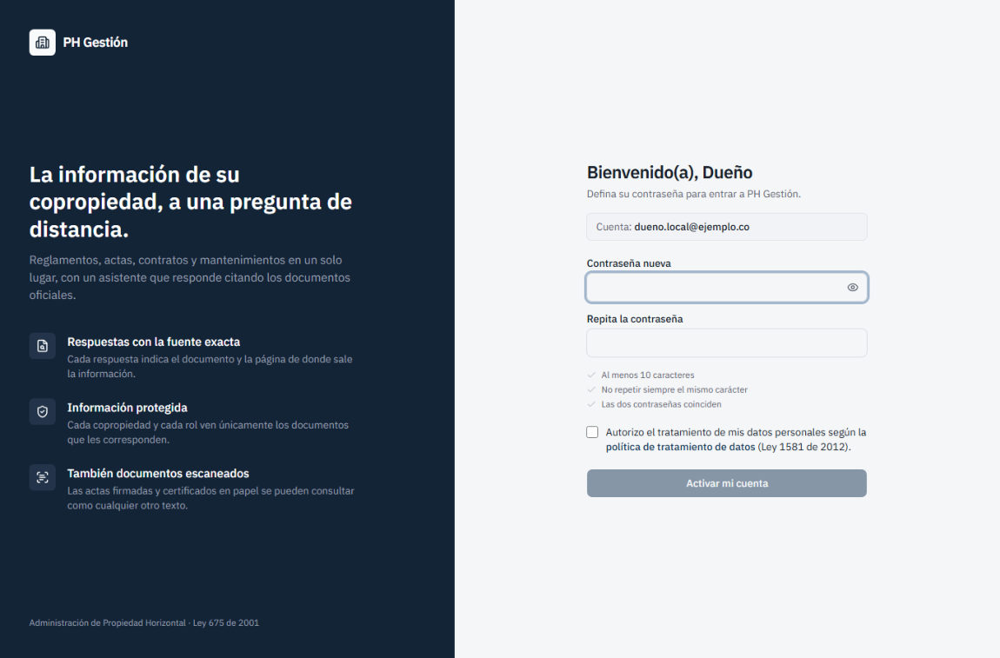
Pantalla para definir la contraseña al activar la cuenta.
El enlace vence en 7 días y sirve una sola vezSi ya no funciona («El enlace ya no sirve»), pida uno nuevo
con Pedir un enlace nuevo o desde «¿Olvidó su contraseña?»: si su cuenta nunca se activó, le
llegará otra invitación. También puede pedirle a la administración que se la reenvíe.
¿No le llegó el correo?Revise las carpetas de correo no deseado y «Promociones». Si administra o
vive en varias copropiedades, use siempre el mismo correo: es una sola cuenta para todas.
3. Iniciar y cerrar sesión, recuperar y cambiar la contraseña
Iniciar sesión
Entre a https://app.propiedadhorizontal.app.
Escriba su Correo electrónico y su Contraseña (el ojo muestra lo que escribe).
Pulse Ingresar.
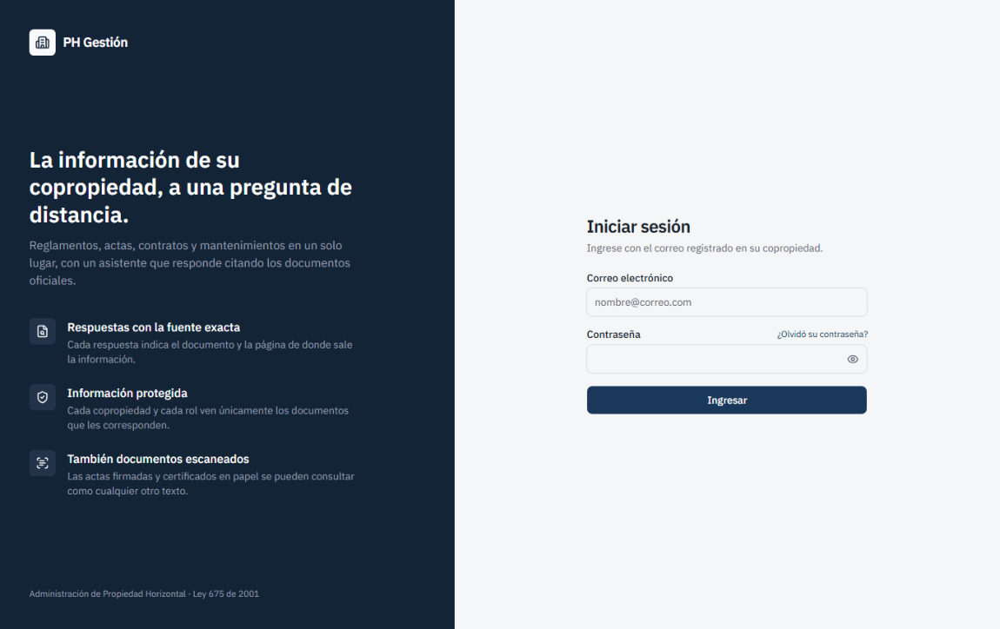
Pantalla de inicio de sesión.
Por seguridadDespués de 10 intentos fallidos en 15 minutos la cuenta se bloquea temporalmente
(«Demasiados intentos…»). Espere unos minutos o recupere la contraseña. La sesión se mantiene abierta varios días en su
equipo; si comparte el computador, ciérrela al terminar.
¿Olvidó su contraseña?
En la pantalla de inicio pulse ¿Olvidó su contraseña?.
Escriba su correo y pulse Enviar enlace.
Abra el correo «Restablecer su contraseña» y pulse Elegir una contraseña nueva. El enlace vence en 1 hora.
Escriba la contraseña nueva dos veces y pulse Guardar y entrar. Se cerrarán las sesiones abiertas en otros equipos.
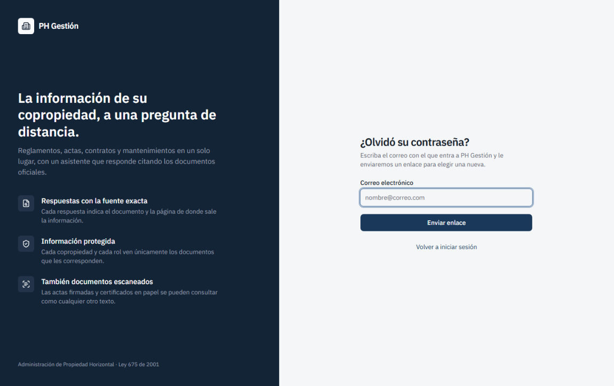
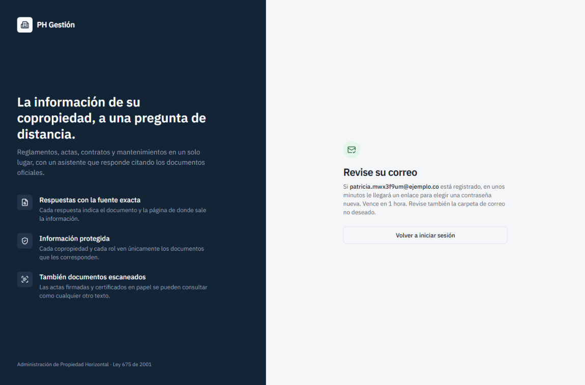
Solicitud del enlace (izquierda) y confirmación de envío (derecha).
Por privacidad, la pantalla siempre dice que el enlace se envió, aunque el correo no esté registrado.
Cambiar la contraseña
Abajo a la izquierda, junto a su nombre, pulse el ícono de Mi cuenta.
Elija Cambiar contraseña.
Escriba la contraseña actual y la nueva (dos veces) y pulse Guardar contraseña. Seguirá dentro en este equipo; los demás se cierran.
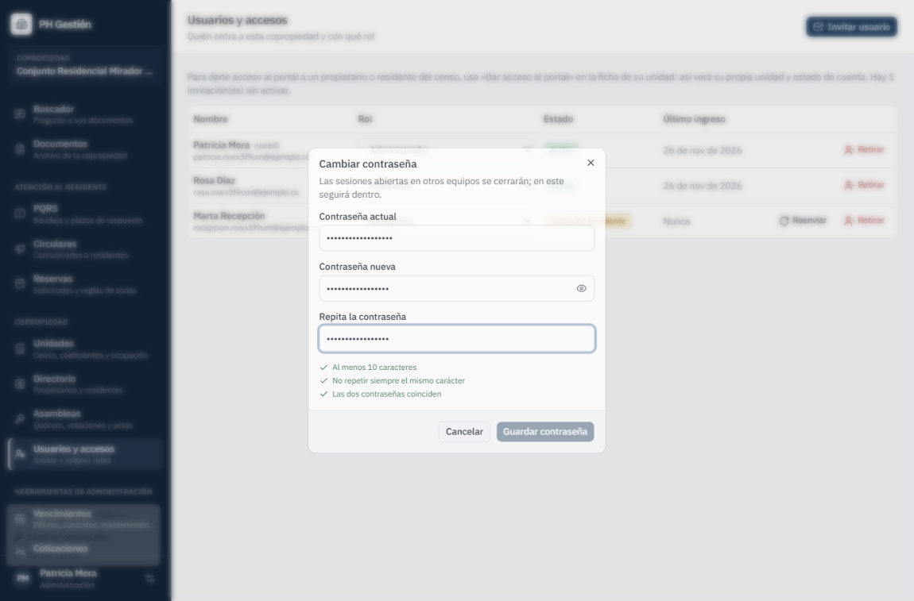
Cambiar la contraseña desde el menú de cuenta.
Cerrar sesión
Pulse el ícono de Mi cuenta (abajo a la izquierda) y elija Cerrar sesión.
4. La pantalla principal y cómo moverse
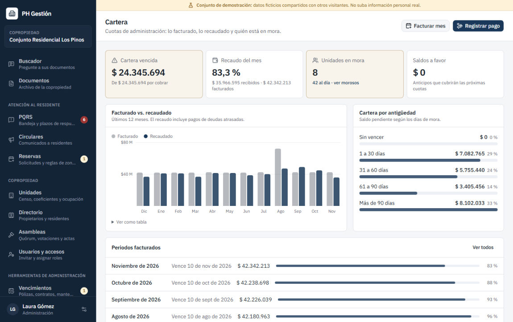
Pantalla típica: menú lateral a la izquierda y contenido a la derecha.
Copropiedad (arriba a la izquierda): muestra en qué conjunto está trabajando. Si su cuenta tiene acceso a
varias copropiedades, púlselo y elija otra: una sola cuenta y una sola contraseña para todas, con el rol que tenga en cada una.
Menú lateral: agrupado por temas (Atención al residente, Copropiedad, Cartera, Mantenimiento, Recaudos…).
Cada persona ve solo las secciones de su rol.
Contadores rojos o amarillos: junto a PQRS, Reservas, Vencimientos o Alertas indican cuántas cosas esperan su atención.
Encabezado de cada pantalla: título, explicación corta y, a la derecha, las acciones principales (por ejemplo Registrar pago).
Su nombre (abajo): rol actual y menú Mi cuenta (cambiar contraseña, cerrar sesión).
En el celular: el menú se abre con el botón de tres rayas, arriba a la izquierda.
Si administra varias copropiedades: «Mis copropiedades»
Quien es administrador(a) en dos o más copropiedades llega, al iniciar sesión, a Mis copropiedades: un
resumen con lo que pide atención en cada conjunto, sin tener que entrar uno por uno. También se abre desde el selector de
copropiedad (arriba a la izquierda) con Resumen de todas.
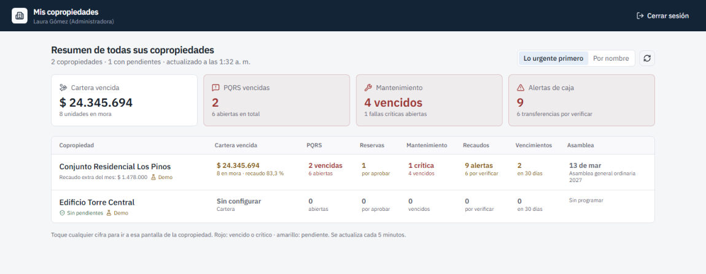
«Mis copropiedades»: totales arriba y una fila por conjunto.
Arriba, los totales de todos sus conjuntos: cartera vencida y unidades en mora, PQRS vencidas, mantenimientos
vencidos y fallas críticas, y alertas de caja con las transferencias por verificar.
Debajo, una fila por conjunto:
Columna
Qué muestra
Al tocarla abre
Cartera vencida
Saldo vencido, unidades en mora y % de recaudo del mes
Morosos
PQRS
Vencidas (fuera del plazo de 15 días hábiles) y abiertas
Bandeja de PQRS
Reservas
Solicitudes por aprobar
Reservas
Mantenimiento
Fallas críticas abiertas y mantenimientos vencidos
Novedades o calendario
Recaudos
Alertas de caja y transferencias por verificar
Alertas o conciliación
Vencimientos
Pólizas y contratos que vencen en 30 días, vencidos o por revisar
Vencimientos
Asamblea
Fecha de la próxima asamblea (o «En curso»)
La asamblea
Colores: rojo es vencido o crítico; amarillo, pendiente. Un conjunto sin nada que atender muestra «Sin pendientes» en verde.
Orden: por defecto Lo urgente primero (los conjuntos con más cosas vencidas arriba); también Por nombre.
Para entrar a un conjunto, toque su nombre. El resumen se actualiza solo cada 5 minutos, o con el botón de actualizar.
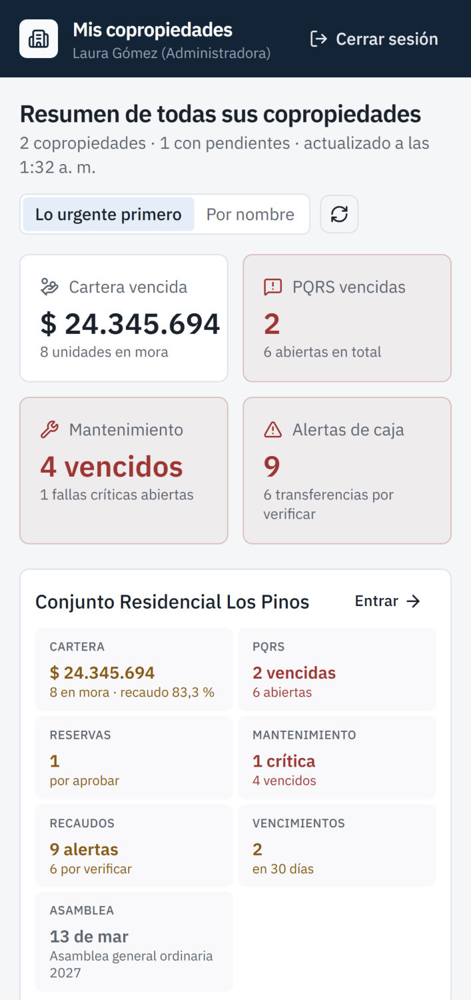
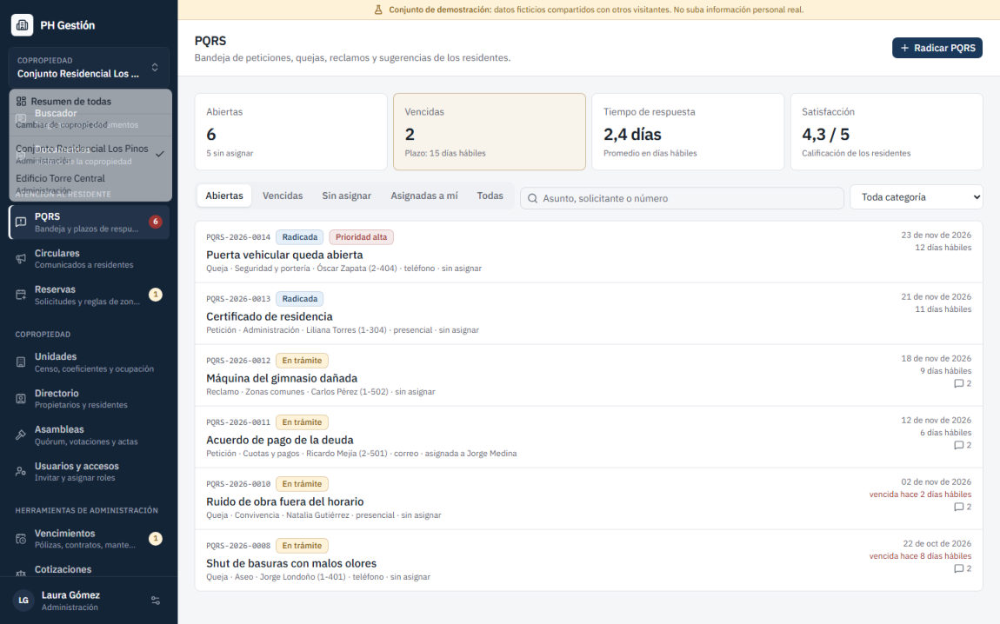
En el celular cada conjunto es una tarjeta (izquierda). «Resumen de todas» en el selector de copropiedad (derecha).
Nada se pierde en silencioLas operaciones de dinero, cartera, unidades y mantenimiento quedan en una
auditoría con quién, cuándo y por qué. Los errores no se borran: se anulan con un motivo, y la anulación queda visible.
5. Roles: qué puede hacer cada persona
El rol lo asigna la administración en Usuarios y accesos. Una misma persona puede tener roles
distintos en copropiedades distintas.
Sección
Administrador
Recepción
Contabilidad
Consejo
Mantenimiento
Residente
Buscador y documentos
Todo
Sí
Sí
Sí
Sí
Solo públicos
Vencimientos, cotizaciones, actas
Sí
—
—
—
—
—
Unidades y directorio
Gestiona
Consulta
Consulta
Consulta
—
Su unidad
Usuarios y accesos
Sí
—
—
—
—
—
Cartera
Todo
—
Pagos
Consulta
—
Su cuenta
Recaudos
Todo
Registra y cierra caja
Verifica y concilia
Tableros y cortes
—
—
PQRS, circulares, reservas
Todo
Atiende
—
—
—
Las suyas
Asambleas
Gestiona
Sala
Consulta
Consulta
—
Asiste y vota
Mantenimiento
Todo
Reporta y consulta
—
Panel
Su trabajo
—
Si a alguien le falta una sección que necesita, no es un error: su rol no la incluye. La administración
puede cambiarle el rol en Usuarios y accesos.
Parte IIPuesta en marcha del conjunto
Lista ordenada para dejar una copropiedad nueva lista para operar. Hágala una sola vez, en este orden: cada
paso usa lo que deja el anterior.
Lista de verificación de la puesta en marcha
#
Paso
Dónde
Ver
1
Cargar el censo: unidades, coeficientes, propietarios, residentes y vehículos
Unidades → Importar Excel
Sección 11
2
Revisar que los coeficientes sumen 100 %
Unidades
Sección 11
3
Configurar la cuota de administración, el vencimiento, el descuento y los intereses
Cartera → Configuración
Sección 13
4
Configurar los conceptos de recaudo (parqueadero, alquiler, aseo) y las zonas sociales
Recaudos → Configuración
Sección 14
5
Definir las reglas de reserva de cada zona social
Reservas → Reglas
Sección 15
6
Subir los documentos: reglamento, manual de convivencia, actas, contratos, pólizas
Documentos
Sección 7
7
Confirmar los vencimientos que la plataforma detecte en esos documentos
Vencimientos
Sección 8
8
Invitar al equipo: recepción, contabilidad, consejo, técnico
Usuarios y accesos
Sección 12
9
Registrar los equipos, contratistas y planes de mantenimiento
Mantenimiento
Sección 17
10
Facturar el primer mes
Cartera → Facturación
Sección 13
11
Dar acceso al portal a los residentes
Ficha de cada unidad
Sección 12
Antes de invitar a todos los residentesAvise a quien administra la plataforma: con muchas invitaciones o
circulares por correo puede ser necesario ampliar el plan de correo para que ningún mensaje se quede sin enviar.
Si viene de otro sistema o de un ExcelNo tiene que adaptar su archivo: el importador reconoce columnas
como «Apto», «Cédula» o «Celular». Puede importar varias veces; lo que ya está no se duplica.
Parte IIILos módulos, uno por uno
Cada sección explica para qué sirve el módulo, quién lo usa, qué muestra cada pantalla y cómo hacer cada tarea, paso a paso.
6. Buscador con inteligencia artificial
Haga preguntas en lenguaje normal sobre los documentos de la copropiedad («¿Hasta cuándo está vigente la póliza?»,
«¿Qué dice el manual sobre mascotas?»). La respuesta se basa únicamente en los documentos subidos, y cada dato
lleva un número que indica el documento y la página de donde sale.
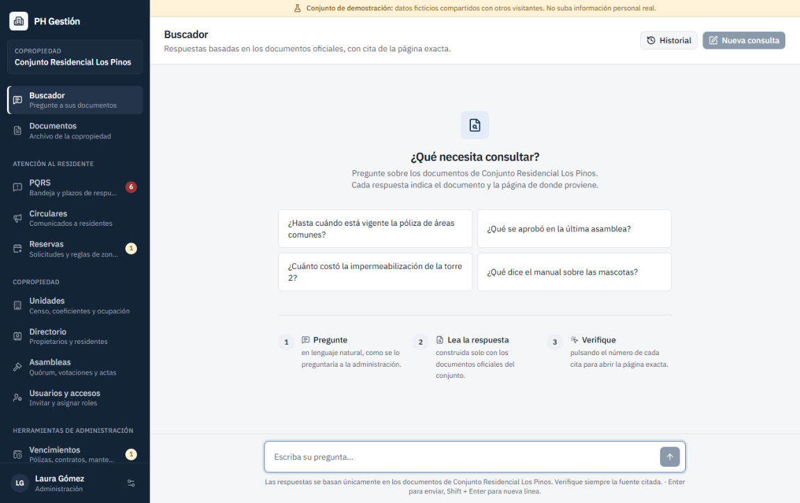
El buscador sugiere preguntas frecuentes para empezar.
Hacer una pregunta
Entre a Buscador.
Escriba la pregunta en la caja de abajo y pulse Enter (o el botón de flecha). Para escribir varias líneas use Shift + Enter.
Lea la respuesta. Los números pequeños (1, 2…) remiten a las Fuentes citadas, debajo.
Pulse Ver página en una fuente para abrir el documento justo en esa página, con el texto resaltado.
Puede seguir preguntando sobre el mismo tema: el asistente recuerda la conversación. Para empezar otra, pulse Nueva consulta.
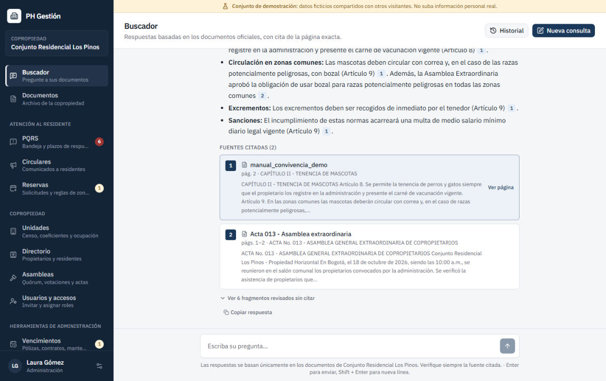
Respuesta con fuentes citadas: documento, página y fragmento exacto.
Historial: conversaciones anteriores.
Copiar respuesta: para pegarla en un correo o en WhatsApp.
Ver fragmentos revisados sin citar: lo que el asistente leyó pero no usó (útil si la respuesta parece incompleta).
Preguntas que funcionan mejorConcretas y con palabras del documento: «¿Cuál es el horario de la
piscina?» en lugar de «horarios». Si la respuesta dice que no encontró información, probablemente el documento no está
subido o no lo menciona.
Qué ve cada quienLos residentes solo obtienen respuestas de los documentos marcados como visibles para
residentes. Los documentos «Solo administración» nunca aparecen en sus respuestas.
7. Documentos
El archivo digital de la copropiedad. Todo lo que suba aquí queda disponible en el buscador en unos segundos, también los
documentos escaneados en papel: la plataforma reconoce su texto automáticamente.
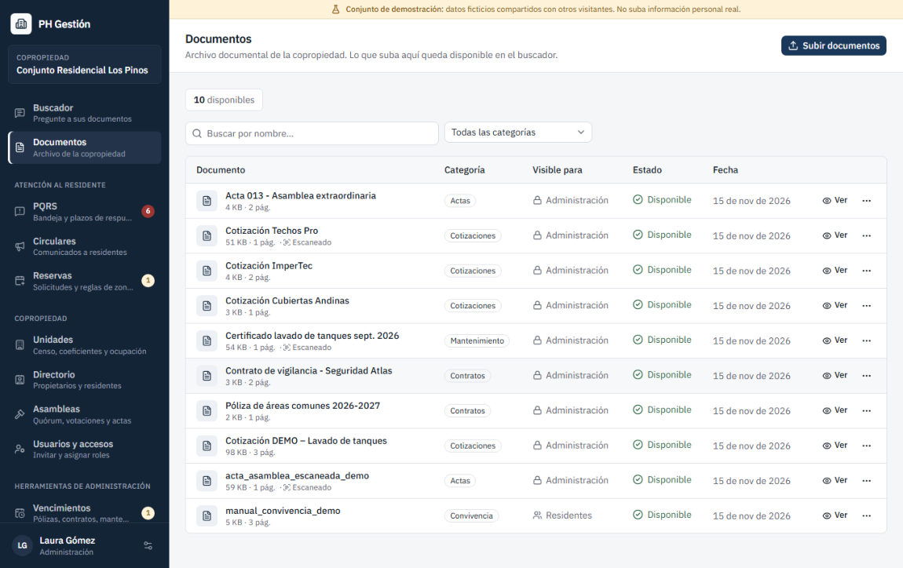
Lista de documentos con su categoría, quién puede verlos y su estado.
Subir documentos
Pulse Subir documentos.
Arrastre los PDF a la ventana o haga clic para elegirlos (hasta 50 MB cada uno).
Elija la Categoría: Actas, Contratos (incluye pólizas), Mantenimiento, Financiero, Convivencia, Comunicados o Cotizaciones.
Elija ¿Quién puede consultarlo?: Residentes y administración (aparece en el buscador de los residentes) o Solo administración (información reservada). Convivencia y Comunicados vienen marcados para residentes; el resto, solo para la administración.
Pulse Subir documento. El estado pasa de «Procesando» a «Disponible».
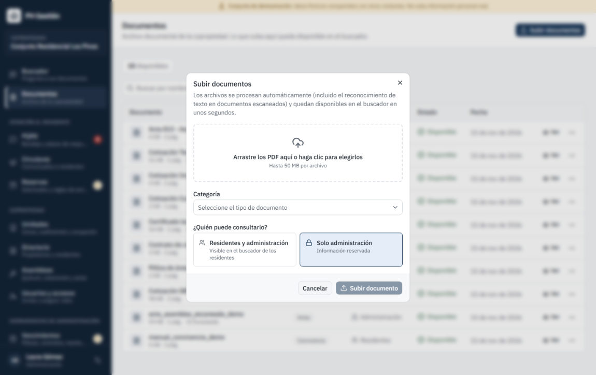
Ventana para subir documentos.
Ver abre el documento en el visor, al lado derecho.
El menú ⋯ de cada fila permite Volver a procesar el documento (o Reintentar procesamiento si quedó en error) y Eliminar. Para cambiar su categoría o su visibilidad, elimínelo y súbalo de nuevo con los datos correctos.
Filtre por nombre o por categoría con los controles de arriba.
Antes de marcar un documento como visible para residentesRevise que no tenga datos personales de
terceros (cédulas, teléfonos, deudas). Ante la duda, déjelo en «Solo administración».
Documentos que activan otras funcionesEn los documentos de Contratos (y pólizas), Mantenimiento y Actas se
buscan fechas para los Vencimientos; las Cotizaciones se pueden comparar y las Actas se resumen automáticamente.
8. Vencimientos
La plataforma lee los documentos y detecta fechas importantes: vencimiento de pólizas, fin de contratos, mantenimientos
obligatorios. Usted las confirma, y desde entonces recibe avisos por correo 30, 15, 7 y 1 día antes.
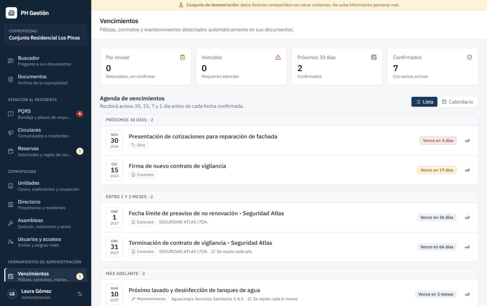
Resumen de vencimientos y agenda de los próximos días.
Revisar lo detectado
En Por revisar aparecen las fechas detectadas, cada una con el documento de origen.
Si es correcta, pulse Confirmar. Si hay algo mal (fecha, título, proveedor), pulse Editar, corríjalo y confirme.
Si no aplica, ábrala y pulse Descartar.
Cambie entre Lista y Calendario para ver las fechas por mes. Los colores
indican: vencido o en 7 días o menos, en 30 días o menos, y por revisar.
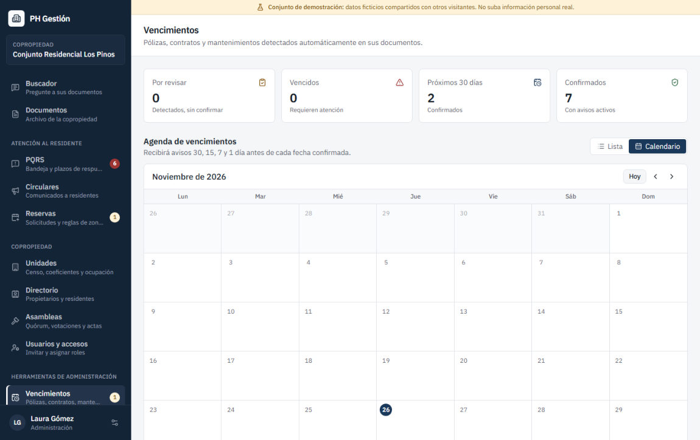
Vista de calendario de los vencimientos.
9. Cotizaciones
Compare de 2 a 4 cotizaciones del mismo servicio. La plataforma extrae de cada una el precio, el IVA, la garantía, el plazo, la
forma de pago, qué incluye y qué no, y prepara una conclusión para el consejo. Cada dato se puede verificar en su documento.
Crear una comparación
Suba las cotizaciones en PDF con Subir cotizaciones (o desde Documentos, con la categoría Cotizaciones).
Pulse Nueva comparación.
Escriba ¿Qué se está cotizando? (por ejemplo, «Impermeabilización cubierta torre 2») y marque entre 2 y 4 cotizaciones.
Pulse Comparar. En menos de un minuto aparece el cuadro comparativo.
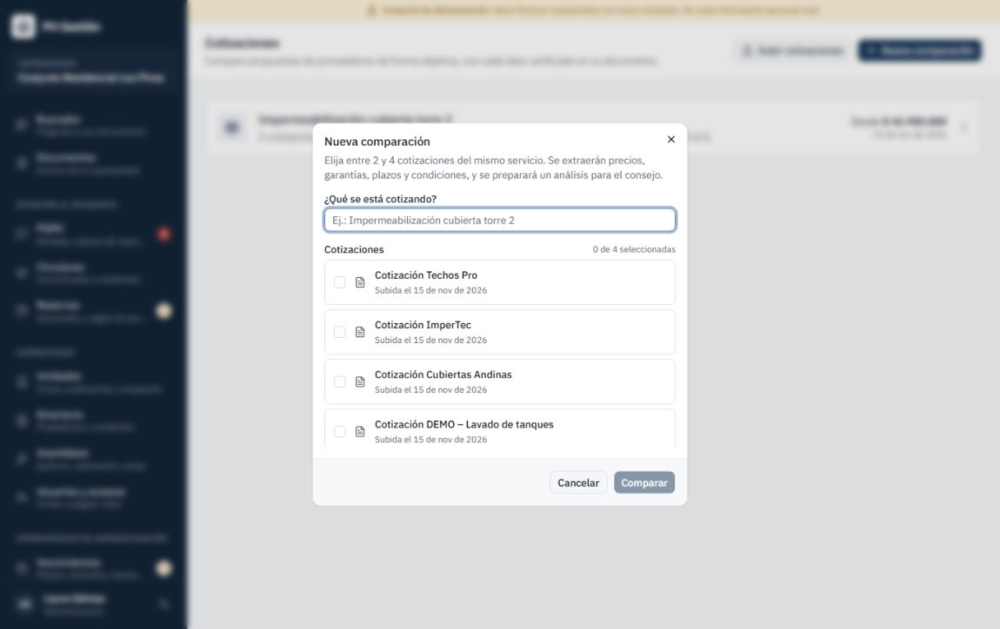
Elegir las cotizaciones a comparar.
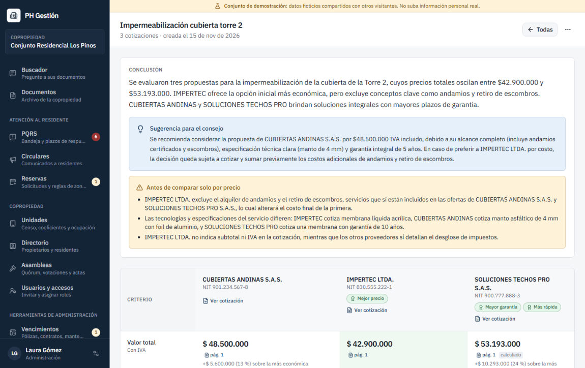
Cuadro comparativo con la conclusión y etiquetas como «Mejor precio» o «Mayor garantía».
Para presentar al consejoLa conclusión resume diferencias importantes (por ejemplo, una oferta barata que
no incluye andamios). Use Ver cotización y los enlaces de página para mostrar la fuente de cada dato.
10. Actas
Suba las actas de asamblea y del consejo, y la plataforma extrae el resumen, los acuerdos, las votaciones y los
compromisos (tareas con responsable), para hacerles seguimiento.
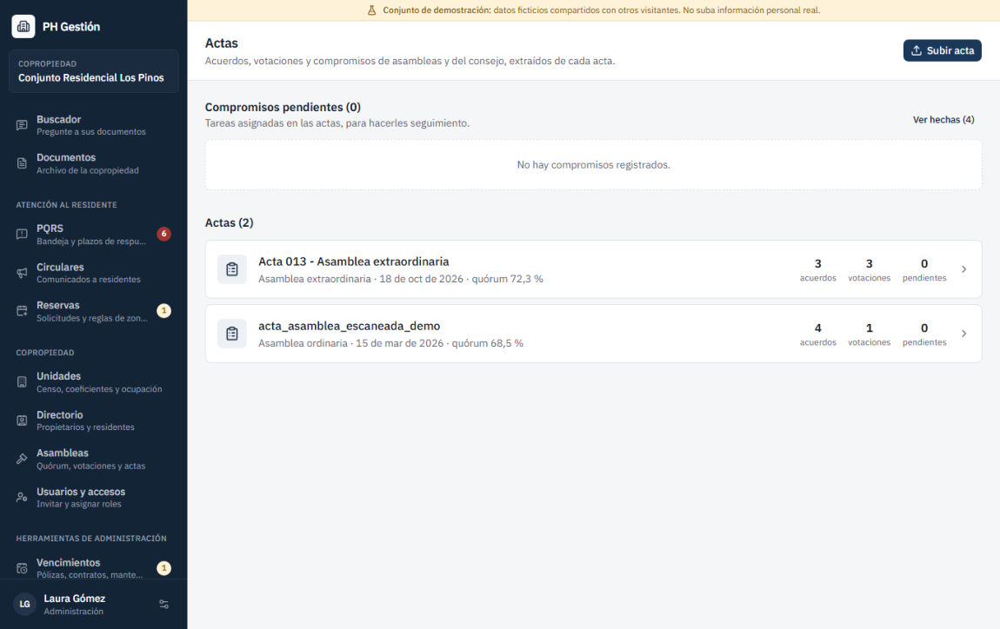
Compromisos pendientes y lista de actas.
Pulse Subir acta, elija el PDF (también escaneado) y pulse Subir documento.
Abra el acta: verá tipo, fecha, quórum, resumen, acuerdos y votaciones, cada uno con Ver en el acta · pág. N.
Cuando un compromiso se cumpla, márquelo como Hecha. Con Ver hechas revisa los ya cumplidos.
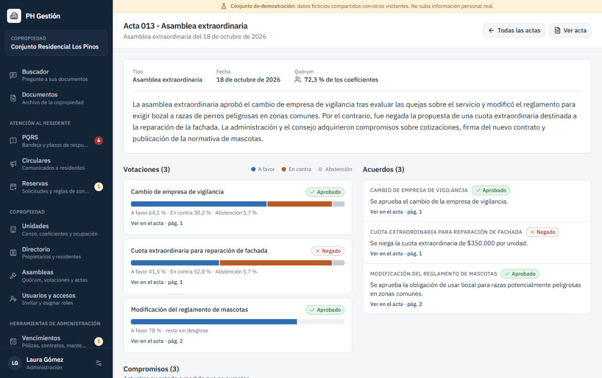
Detalle de un acta con sus acuerdos y la página de origen.
Las actas de las asambleas hechas en PH Gestión (sección 16) se generan solas y se pueden guardar aquí con un clic.
11. Unidades, directorio y censo
El censo de la copropiedad: cada unidad (apartamento, casa, local, oficina) con su coeficiente, sus anexos (parqueaderos,
depósitos), las personas vinculadas (propietario, arrendatario, residente, autorizado) y los vehículos. Es la base de la
cartera, las asambleas y el portal.
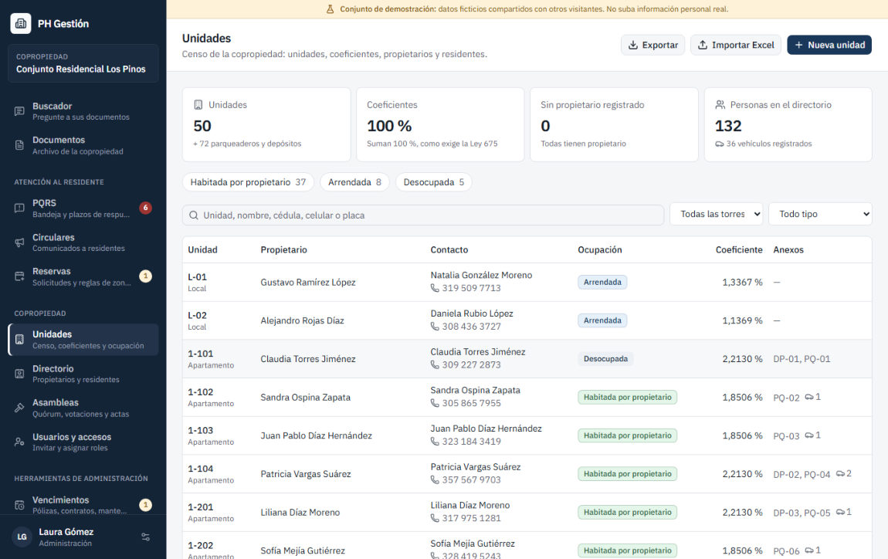
Unidades: indicadores del censo y lista filtrable.
Arriba verá si los coeficientes suman 100 % (como exige la Ley 675), si hay unidades sin propietario y cuántas
personas y vehículos hay. Filtre por torre, tipo u ocupación, o busque por unidad o nombre.
Importar el censo desde Excel (lo más rápido)
En Unidades pulse Importar Excel.
Descargue la Plantilla del censo (.xlsx). Tiene tres hojas (Unidades, Personas y Vehículos), con ejemplos y listas desplegables. Si ya tiene un Excel del administrador anterior, súbalo tal cual.
Arrastre el archivo a la ventana.
Revise los cambios: la plataforma muestra cuántas unidades, personas, vínculos y vehículos nuevos se crearán, y los errores fila por fila. Nada se guarda todavía.
Si todo está bien, confirme la importación. Si hay errores, corríjalos en el Excel y súbalo de nuevo.
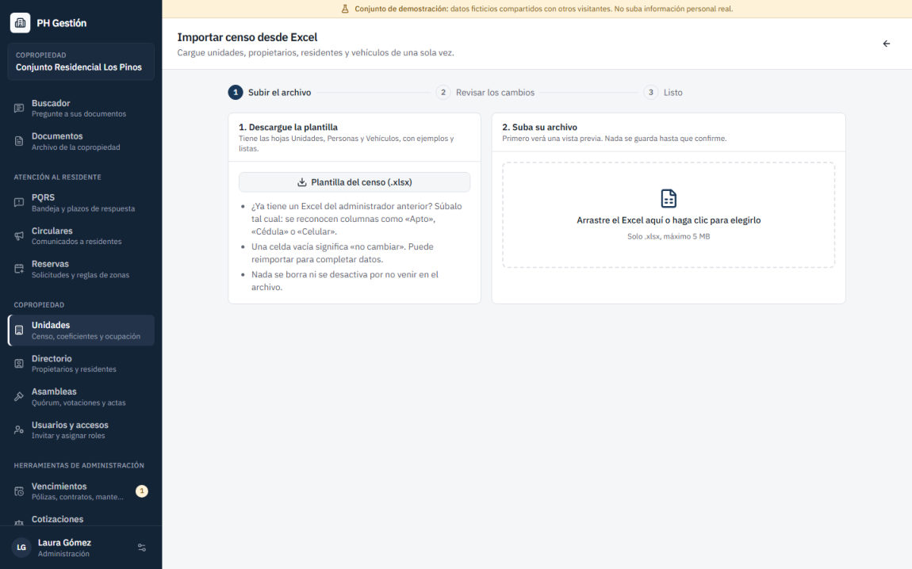
Paso 1 de la importación: plantilla y carga del archivo.
Reglas del importadorUna celda vacía significa «no cambiar». Las filas de ejemplo de la plantilla
(Torre «Ejemplo») se ignoran. Puede reimportar el mismo archivo corregido: lo que ya existe no se duplica.
Crear una unidad a mano
Pulse Nueva unidad.
Llene torre o bloque (vacío si no hay torres), número, tipo, coeficiente en porcentaje (por ejemplo, 1,8506), área y, si la tiene, la matrícula inmobiliaria.
Pulse Registrar unidad.
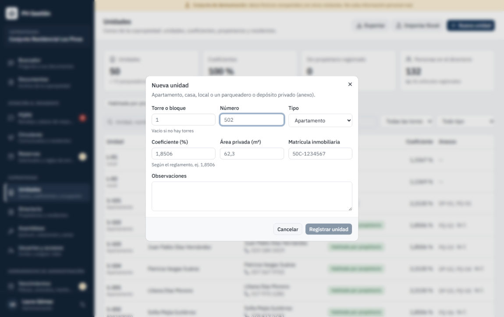
Registrar una unidad.
La ficha de la unidad
Haga clic en cualquier unidad para abrir su ficha. Tiene cinco pestañas:
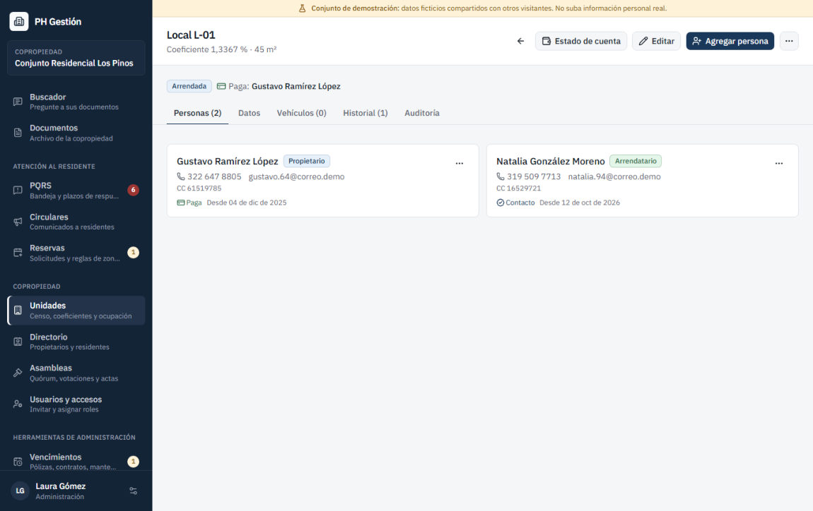
Ficha de una unidad, pestaña Personas.
Personas: quién figura en la unidad, con marcas de Contacto principal, Paga (responsable de la cuota) y Vive aquí. El menú ⋯ de cada persona permite editar sus datos, hacerla contacto principal o responsable del pago, marcar si vive allí y Retirar de la unidad….
Datos: tipo, coeficiente, área, ocupación. Se cambian con Editar.
Vehículos: placas registradas (recepción las reconoce al cobrar el parqueadero). Agregue con Registrar.
Historial: personas que ya no figuran (ventas, arriendos terminados), con fechas y motivo.
Auditoría: cada cambio, con quién lo hizo, cuándo y por qué.
Agregar una persona a una unidad
En la ficha, pulse Agregar persona.
Elija la relación: Propietario, Arrendatario, Residente o Autorizado; la fecha desde la que aplica (vacío = hoy) y si vive en la unidad.
Busque si ya está en el directorio (por ejemplo, alguien con varias unidades) o elija Persona nueva y llene sus datos.
Pulse Vincular.
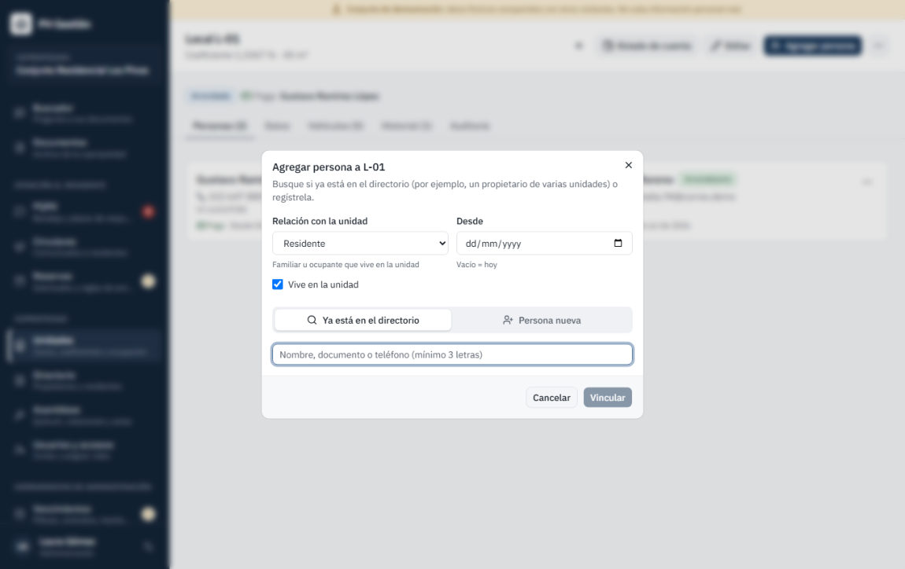
Vincular una persona a la unidad.
Casos frecuentes
Situación
Qué hacer
Se vendió el apartamento
Retire al propietario anterior (motivo «venta») y agregue al nuevo. Marque al nuevo como responsable del pago.
Llega un arrendatario
Agréguelo como Arrendatario y marque «vive en la unidad». Decida quién paga y márquelo como responsable.
Termina un arriendo
Retire al arrendatario con el motivo. Queda en el Historial.
Cambia el teléfono o correo de alguien
Menú ⋯ de la persona → Editar datos de contacto (o desde el Directorio).
Una unidad se creó por error
Retire a sus personas y luego use «Desactivar» en el menú de la ficha. No se borra: queda en la auditoría.
Directorio y exportar
Directorio lista a todas las personas con sus unidades, relación, celular y documento. Filtre por
relación o busque por nombre. Exportar (en Unidades) descarga el censo completo en Excel.
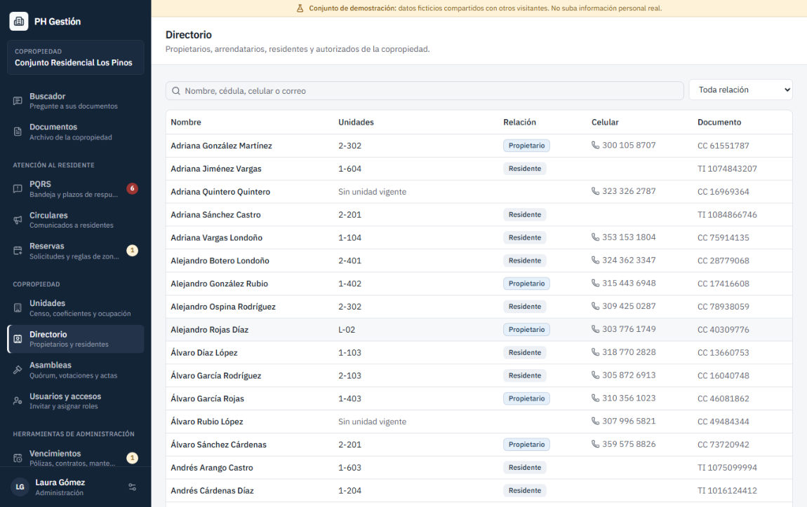
Directorio de propietarios y residentes.
12. Usuarios y accesos
Aquí la administración decide quién entra a la copropiedad y con qué rol. Solo la ve el rol Administrador.
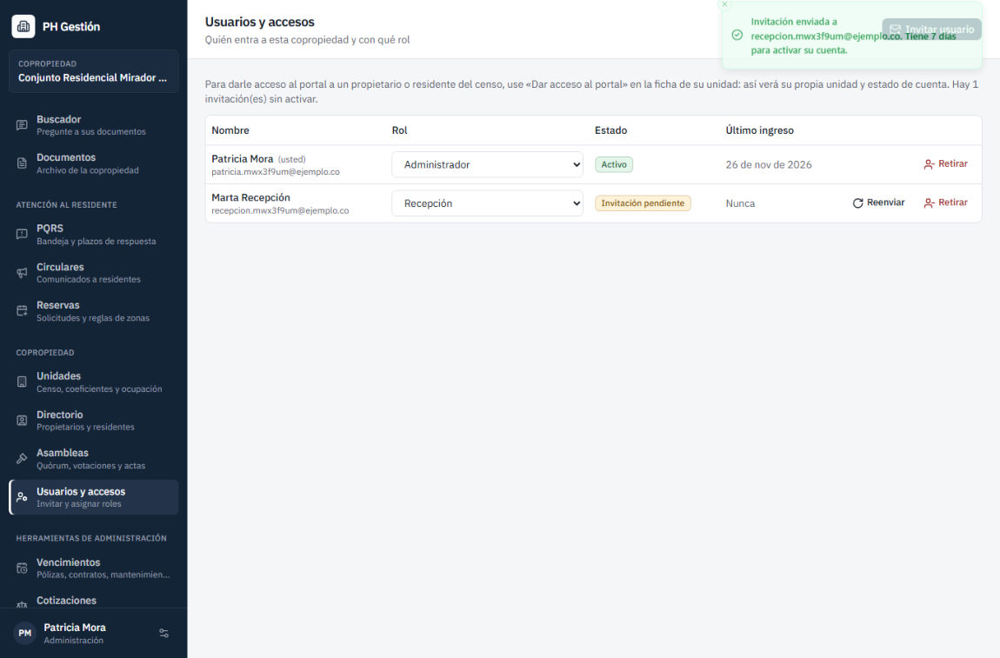
Usuarios de la copropiedad con su rol, estado y último ingreso.
Invitar a alguien del equipo
Pulse Invitar usuario.
Escriba el nombre completo y el correo.
Elija el rol. Debajo de cada uno se explica qué puede hacer.
Pulse Enviar invitación. La persona recibe el correo para definir su contraseña (sección 2). Si ya usa PH Gestión en otra copropiedad, solo se le agrega esta y se le avisa.
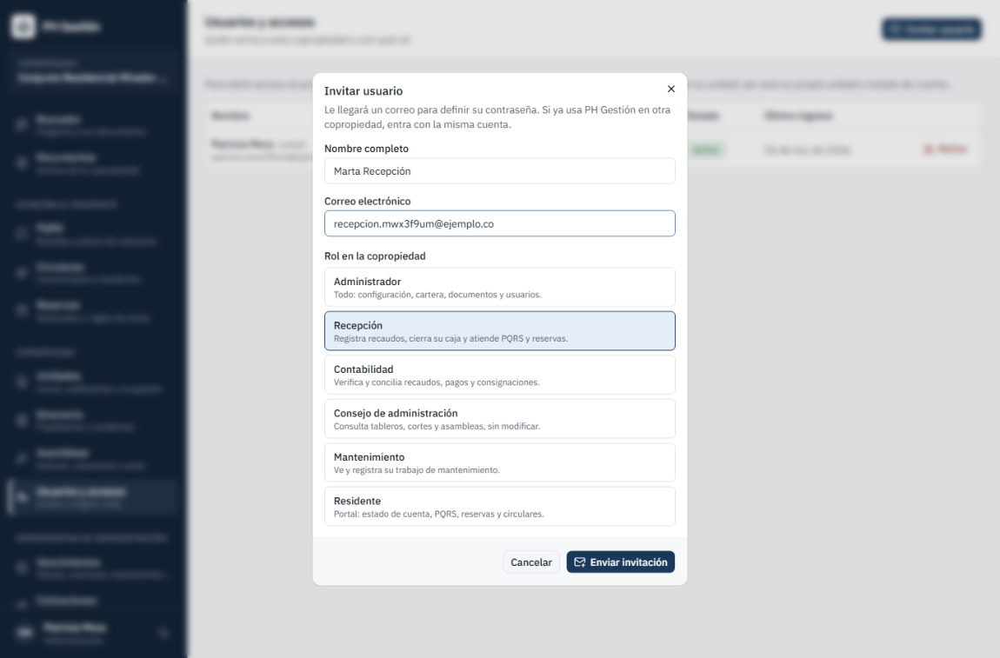
Invitar a un usuario y elegir su rol.
Dar acceso al portal a un residente o propietario
Hágalo desde la ficha de su unidad, no desde Usuarios: así la cuenta queda vinculada a su unidad y verá su estado
de cuenta y sus datos.
Abra la unidad (Unidades → clic en la unidad) y vaya a la pestaña Personas.
En la persona, pulse Dar acceso al portal. Si no aparece el botón, la persona no tiene correo: agréguelo con «Editar datos de contacto».
Confirme con Enviar invitación. Cuando active su cuenta, aparecerá la marca «Con acceso al portal».
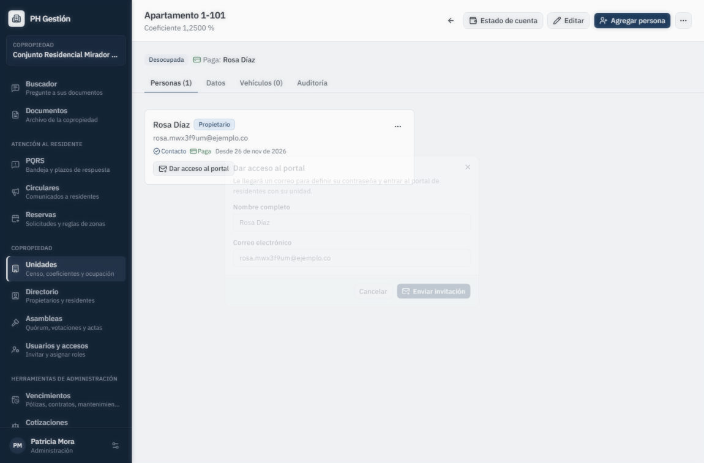
Dar acceso al portal desde la ficha de la unidad.
Otras acciones
Cambiar el rol: elija otro en la lista de la columna Rol. Se aplica de inmediato.
Invitación pendiente: si la persona no la activó, pulse Reenviar para mandarle un enlace nuevo.
Retirar el acceso:Retirar quita el acceso a esta copropiedad de inmediato. Lo que la persona registró se conserva con su nombre.
Siempre queda un administradorLa plataforma no permite retirar ni cambiar de rol al último
administrador de la copropiedad. Para relevar a la administración, invite primero al nuevo administrador.
13. Cartera: cuotas de administración
Facturación mensual de las cuotas, pagos, intereses de mora, cartera vencida, morosos y paz y salvos.
Panel de cartera: vencida, recaudo del mes, unidades en mora y antigüedad.
Configurar la cartera (una vez)
Vaya a Cartera → Configuración.
Elija cómo se calcula la cuota: Por coeficiente (presupuesto mensual × coeficiente de cada unidad, como dice la Ley 675) o Tarifa por tipo de unidad (un valor para apartamentos, otro para locales…).
Escriba el presupuesto mensual de gastos. La pantalla muestra cuánto pagaría una unidad de coeficiente 1 %.
Elija el redondeo de las cuotas, el día de vencimiento, el descuento por pronto pago (si existe) y la tasa de interés de mora.
Escriba los datos de pago que verán los residentes (por ejemplo, la cuenta bancaria) y pulse Guardar configuración.
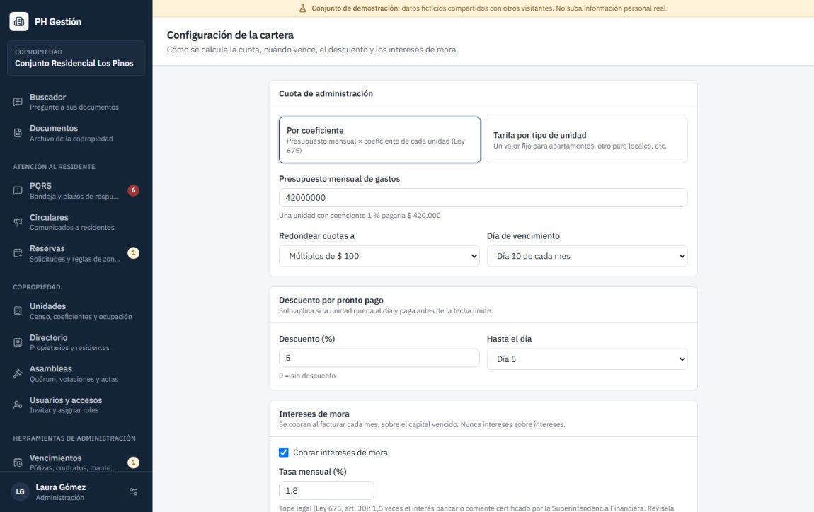
Configuración de la cuota, el vencimiento, el descuento y los intereses.
Intereses de moraLa tasa no puede superar el máximo legal (1,5 veces el interés bancario corriente, art. 30 de
la Ley 675). Actualícela cuando la Superintendencia Financiera certifique una nueva tasa.
Facturar el mes
Vaya a Facturación (o desde el panel) y pulse Facturar mes.
Elija el mes. Verá una vista previa: cuántas unidades, el total de cuotas, los intereses de mora que se causan, el vencimiento, la fecha límite del descuento y el detalle por unidad.
Revise los avisos (por ejemplo, si los coeficientes no suman 100 %).
Pulse Emitir. Nada se guarda antes de este paso.
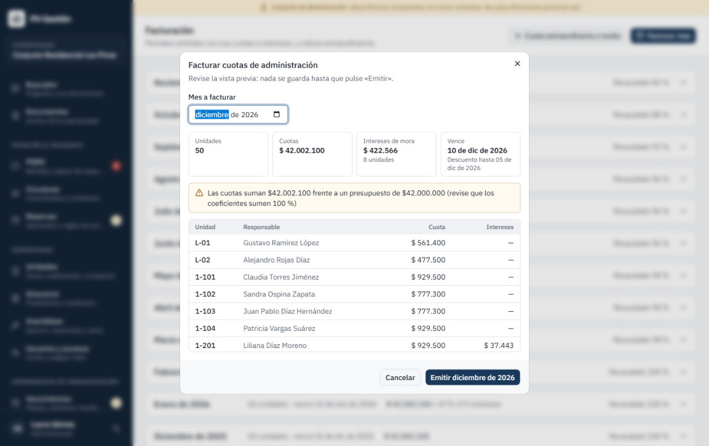
Vista previa de la facturación del mes antes de emitir.
Cuota extraordinaria o multa
En Facturación pulse Cuota extraordinaria o multa.
Elija el concepto (cuota extraordinaria, multa u otros cobros) y cómo se cobra: total repartido por coeficiente o mismo valor por unidad.
Escriba la descripción, el valor total aprobado, el número de cuotas mensuales y el primer vencimiento.
Pulse Crear cobro.
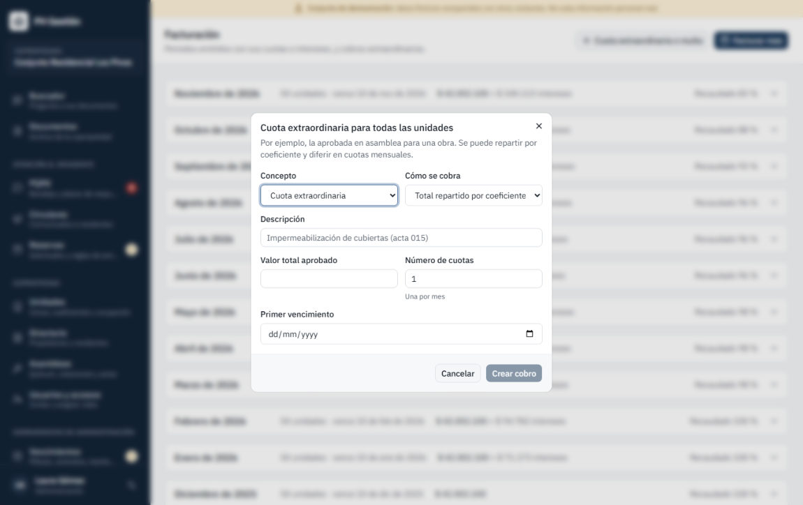
Crear una cuota extraordinaria diferida en cuotas.
Registrar un pago
Pulse Registrar pago (desde Cartera, Pagos o el estado de cuenta de la unidad).
Elija la unidad, la fecha, el valor, el medio (efectivo, transferencia o consignación) y, si aplica, la referencia bancaria.
Confirme. El pago se aplica solo: primero a intereses y luego a la deuda más antigua (art. 1653 del Código Civil). Si sobra, queda como saldo a favor para las próximas cuotas.
Se genera el recibo de caja numerado, que puede descargar en PDF.
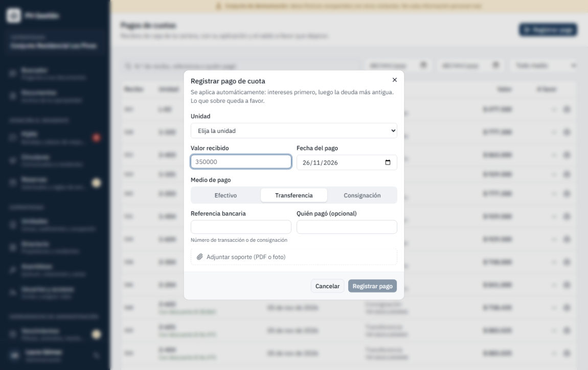
Registrar el pago de una cuota.
¿Se equivocó en un pago?Abra el estado de cuenta de la unidad, ubique el pago en los
movimientos y use Anular con un motivo; luego regístrelo bien. El pago anulado sigue visible en
Pagos (casilla «Incluir pagos anulados») y en la auditoría.
Estado de cuenta y paz y salvo
Desde la ficha de la unidad (Estado de cuenta) o desde Morosos verá el saldo, lo pendiente por
pagar y todos los movimientos con el saldo acumulado.
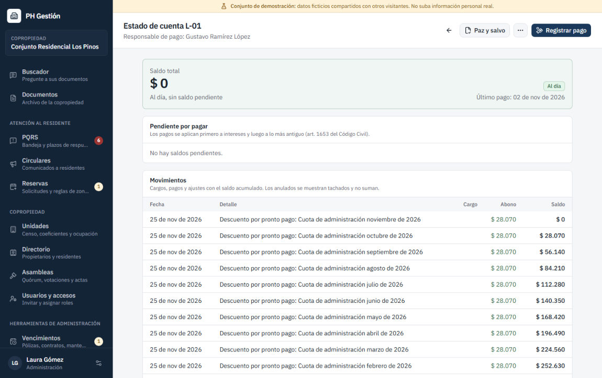
Estado de cuenta de una unidad.
Para expedir un paz y salvo, pulse Paz y salvo: se genera el PDF numerado con un código de
verificación, con el que cualquiera puede comprobar que es auténtico. Solo se expide si la unidad está al día.
Morosos
Morosos lista las unidades con saldo vencido, agrupado por antigüedad (1–30, 31–60, 61–90 y más de
90 días, que es cuando suele pasarse a cobro jurídico). Exportar descarga el listado en Excel.
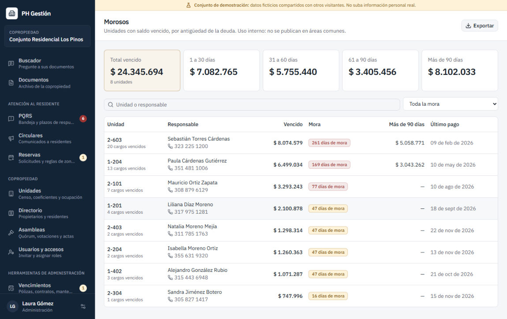
Unidades en mora por antigüedad.
Uso internoLa lista de morosos no debe publicarse en carteleras ni áreas comunes: la ley lo prohíbe.
14. Recaudos, caja y conciliación bancaria
Los ingresos distintos a la cuota de administración: parqueadero de visitantes, alquiler de zonas sociales, aseo y
otros. El módulo sigue cada peso desde que se recibe hasta que se verifica en el banco:
En caja→ cierre y entrega →En administración→ consignación →Consignado→ extracto →Verificado
Las transferencias entran como Por verificar hasta que contabilidad las confirma en el extracto.
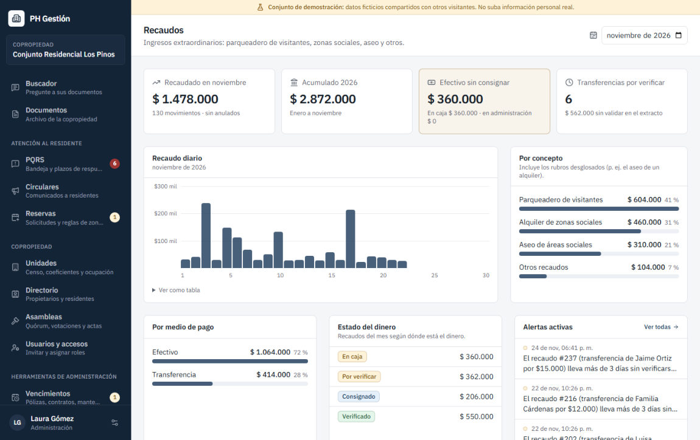
Resumen de recaudos del mes.
Registrar un recaudo (recepción)
Vaya a Registrar.
Elija qué se cobra: Parqueadero de visitantes, Alquiler de zonas sociales, Aseo u Otros recaudos.
Parqueadero: escriba la placa (si es de un residente, la reconoce), la hora de ingreso y de salida; el valor se calcula solo. Zona social: elija la zona y la fecha del evento; queda creada la reserva para esa fecha.
Escriba quién paga, la unidad (o «visitante externo») y el medio de pago.
Pulse Registrar recaudo y entregue el comprobante.
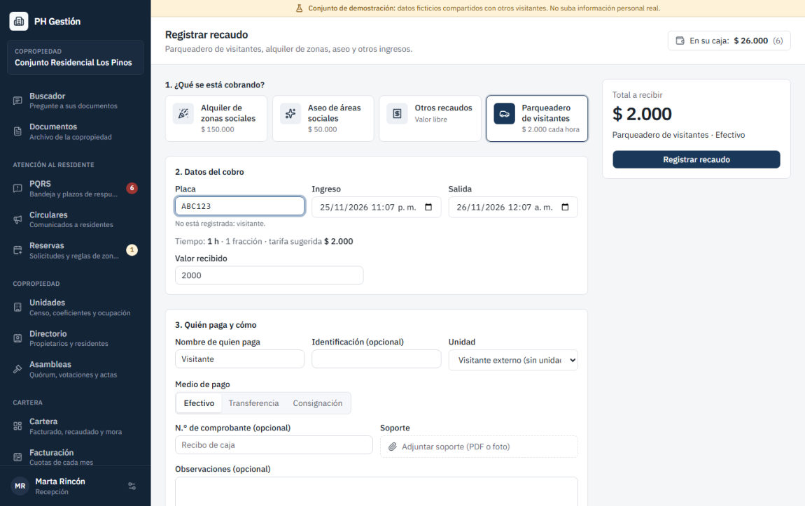
Cobro de parqueadero: la tarifa se calcula con la hora de ingreso y salida.
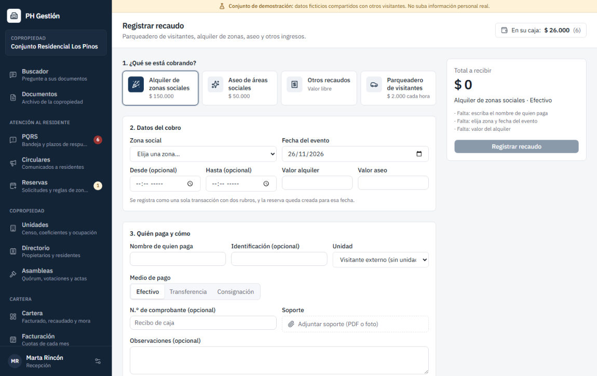
Cobro de alquiler y aseo de una zona social, con la reserva incluida.
Cerrar la caja al final del turno (recepción)
Vaya a Caja y pulse Cerrar caja.
Escriba la base con la que empezó y el dinero contado físicamente.
La plataforma compara con lo registrado y muestra la diferencia (sobrante o faltante). Pulse Confirmar cierre.
Cuando entregue el efectivo, pulse Entregar a administración, elija quién recibe y pulse Registrar entrega.
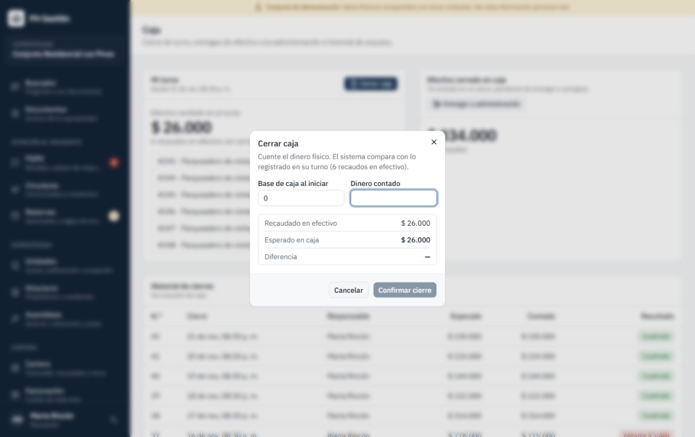
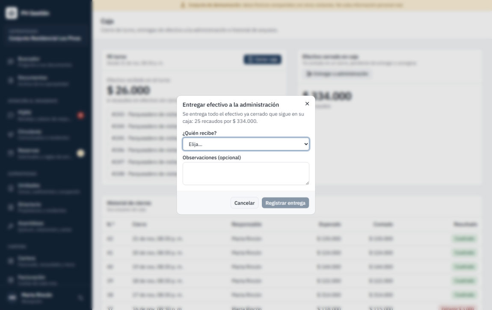
Cierre de caja (izquierda) y entrega del efectivo a la administración (derecha).
Diferencias de cajaSi el conteo no cuadra, se genera una alerta de auditoría para la administración. No
ajuste el conteo para que cuadre: registre lo real.
Consignar y conciliar (administración y contabilidad)
En Conciliación, sección «Efectivo por consignar», pulse Consignar.
Elija los recaudos que llevó al banco, la fecha, el banco, la referencia y el valor consignado. Para consignar solo una parte de alguno, escriba el valor en su fila.
Contabilidad pulsa Aprobar en la consignación (o la rechaza con motivo).
Cuando aparezca en el extracto bancario, pulsa Verificar en extracto. Los recaudos quedan Verificados.
Las transferencias se verifican una a una desde el detalle del recaudo (Verificar en extracto).
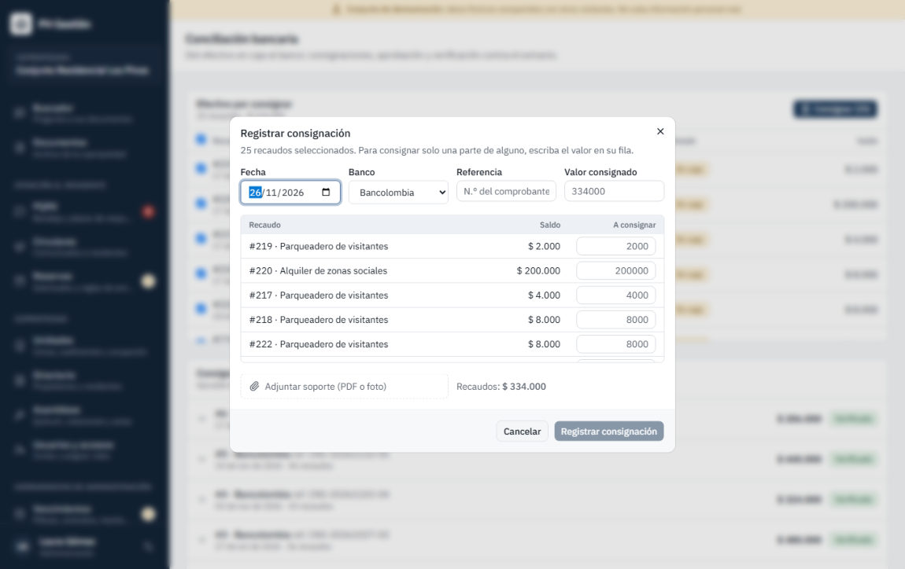
Registrar una consignación con los recaudos incluidos.
Movimientos, alertas, reportes y configuración
Movimientos: buscar cualquier recaudo por fecha, concepto, medio o estado. Desde el detalle se puede anular con motivo.
Alertas: diferencias de caja, transferencias sin verificar después de 3 días, anulaciones de dinero ya consignado. Atienda cada una y pulse Marcar como atendida.
Reportes: informes general, de parqueadero, de zonas sociales, de aseo, de caja (arqueo) y de trazabilidad, para este mes, el anterior, el año o un rango. Se ven en pantalla, en Excel o en PDF. El corte mensual se genera solo el día 1 y se envía a la administración y al consejo; también se puede generar con Generar corte.
Configuración: conceptos de cobro (tarifa fija, por tiempo o valor libre) y zonas sociales con sus tarifas de alquiler y aseo. Agregar un cobro nuevo no requiere cambios en el sistema. Un cambio de tarifa aplica a los recaudos nuevos.
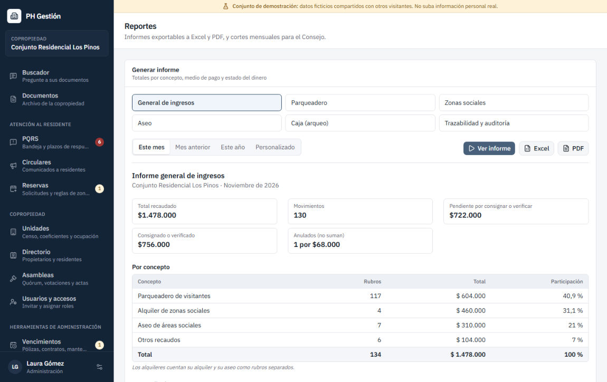
Informe general de ingresos del mes.
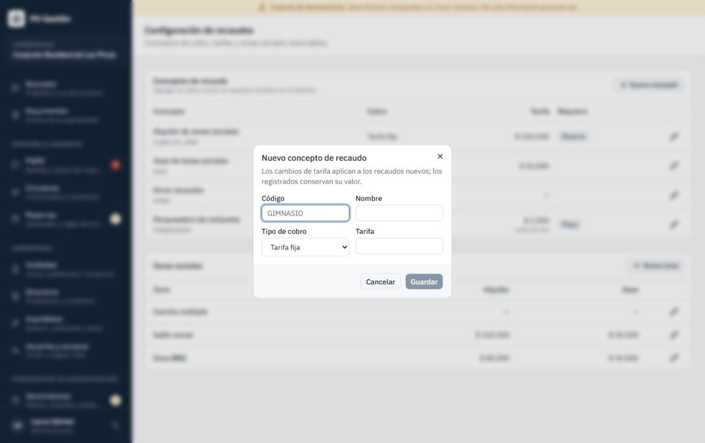
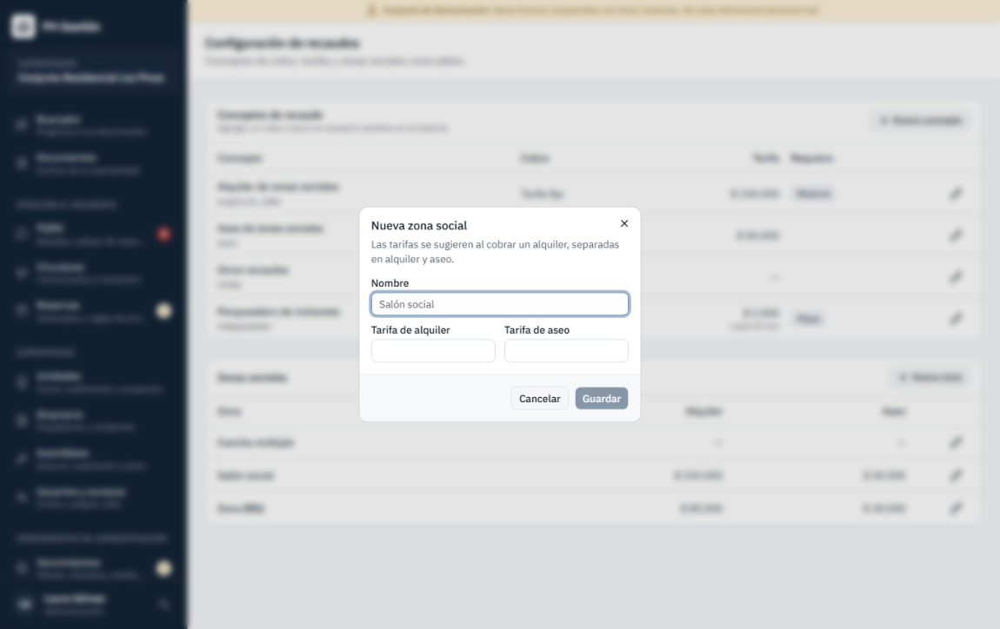
Crear un concepto de recaudo (izquierda) y una zona social (derecha).
15. Atención al residente: PQRS, circulares y reservas
PQRS
Peticiones, quejas, reclamos, sugerencias y felicitaciones. Las radican los residentes desde el portal, o recepción a
nombre de alguien (presencial, por teléfono o por correo). El plazo de respuesta es de 15 días hábiles; la
plataforma cuenta los días hábiles con los festivos de Colombia.
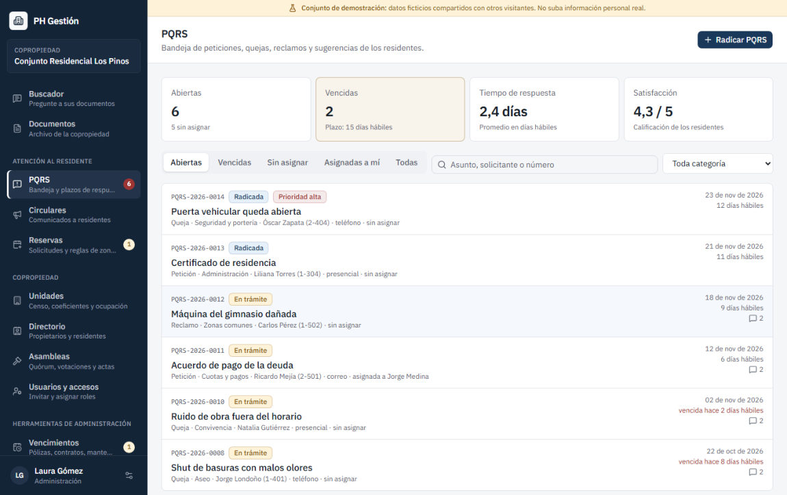
Bandeja de PQRS con indicadores de plazo, tiempo de respuesta y satisfacción.
Use las pestañas Abiertas, Vencidas, Sin asignar,
Asignadas a mí y Todas, y el filtro de categoría.
Atender una PQRS
Abra la PQRS. A la derecha, asigne un Responsable y la Prioridad.
Abajo escriba y elija el tipo de mensaje: Nota interna (solo la ve el personal), Enviar mensaje (al residente, por ejemplo para pedir más datos) o Responder oficialmente.
La respuesta oficial deja la PQRS como «Respondida» y le llega por correo al residente, que puede calificarla o reabrirla si no quedó satisfecho.
Si es una falla de un equipo o zona común, pulse Crear novedad de mantenimiento: queda enlazada en el módulo de mantenimiento.
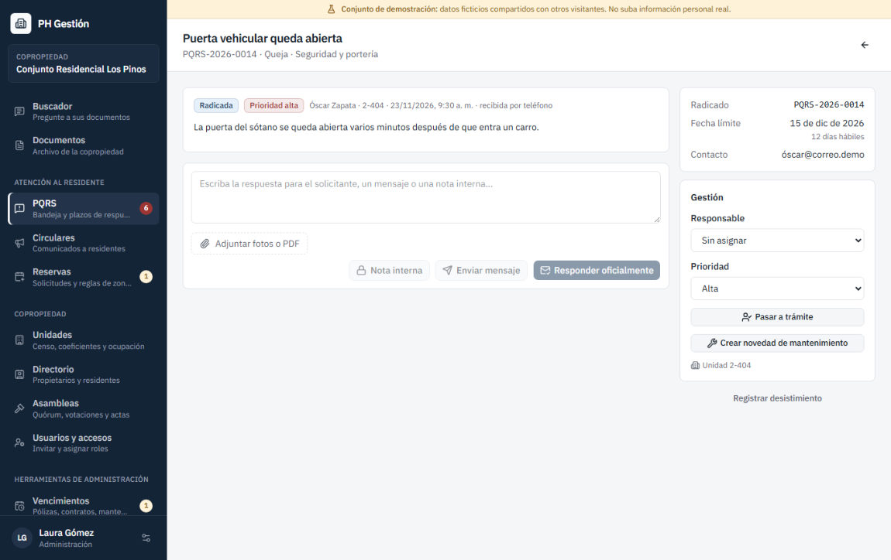
Detalle de una PQRS con las opciones de respuesta y gestión.
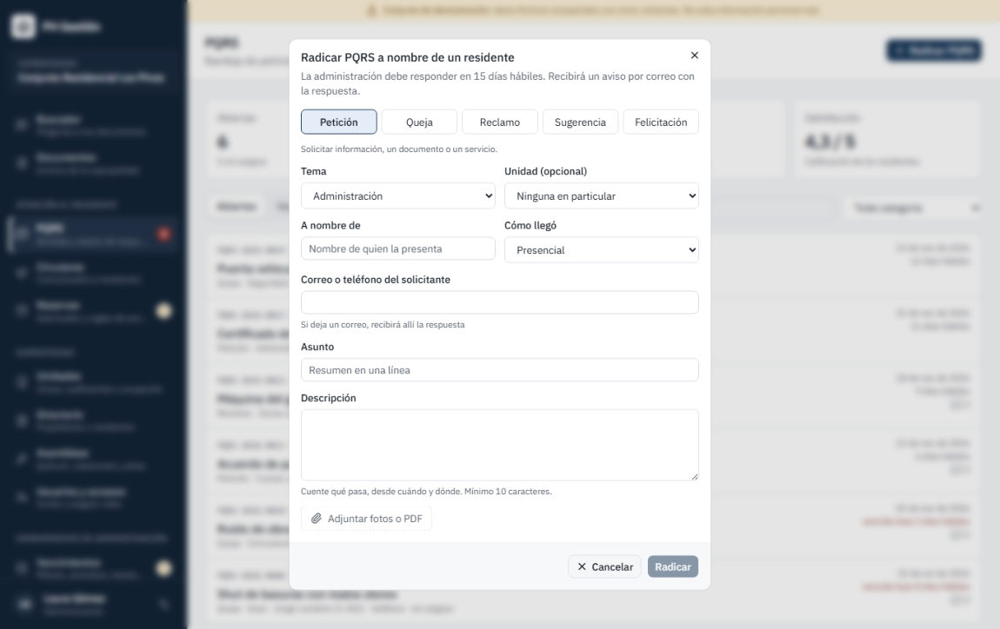
Radicar una PQRS a nombre de un residente (presencial, teléfono o correo).
Circulares
Comunicados numerados a los residentes, con acuse de lectura.
Pulse Nueva circular.
Escriba el título, elija el tipo (informativa, convocatoria, mantenimiento…) y para quién (toda la copropiedad o una torre).
Escriba el texto. Admite formato sencillo: **negrita**, listas con guion y enlaces. Revise la Vista previa.
Marque Importante si debe destacarse en el inicio de los residentes, y Enviar por correo al publicar si debe llegar también por correo (incluye a propietarios sin cuenta que tengan correo en el directorio).
Pulse Guardar borrador. Revísela en la lista y pulse Publicar (o Publicar y enviar por correo). Al publicarla queda numerada y ya no se puede editar.
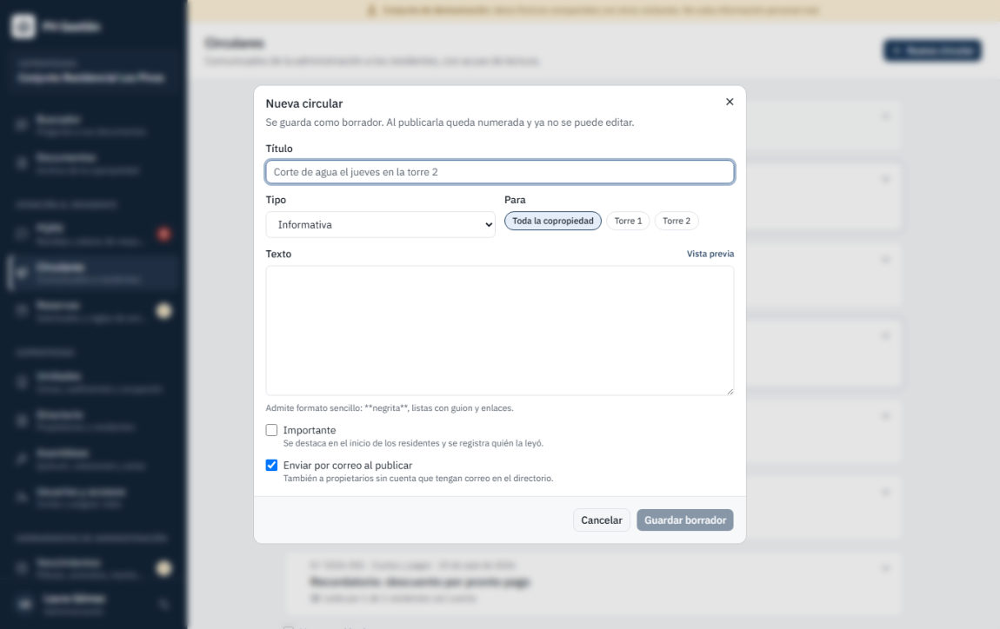
Redactar una circular.
En la lista verá cuántos residentes con cuenta la han leído («Leída por X de Y»).
Reservas de zonas sociales
Los residentes reservan desde el portal según las reglas de cada zona. La administración aprueba o rechaza las solicitudes
y fija las reglas.
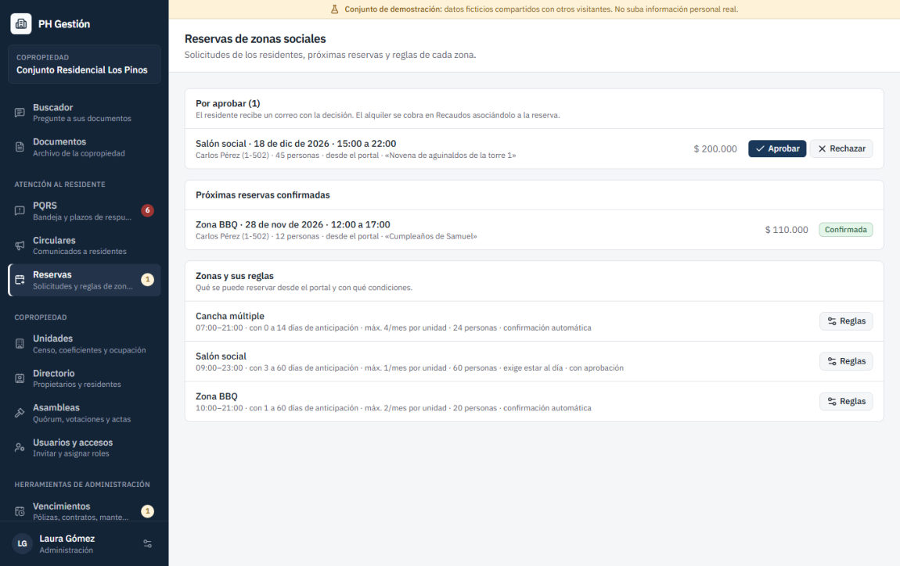
Solicitudes por aprobar, próximas reservas y reglas.
En Por aprobar, revise cada solicitud (zona, fecha, horario, unidad, número de personas, motivo).
Pulse Aprobar o Rechazar (con motivo). El residente recibe un correo con la decisión.
El alquiler se cobra en Recaudos → Registrar → Alquiler de zonas sociales, asociándolo a la reserva.
Reglas de cada zona
Con Reglas defina horario de apertura y cierre, anticipación mínima y máxima, reservas por mes por
unidad, capacidad, reglas de uso y si se reserva desde el portal, si requiere aprobación y si exige estar al día con la cartera.
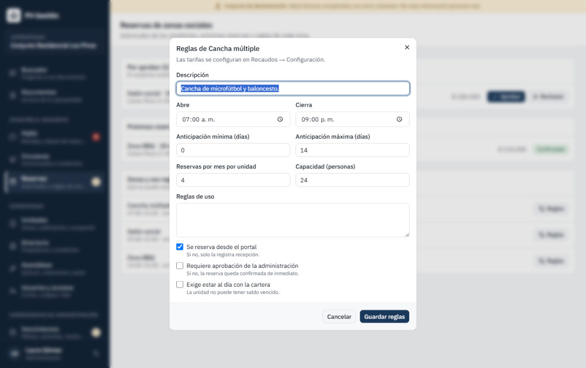
Reglas de reserva de una zona social.
16. Asambleas
Asambleas de copropietarios según la Ley 675 de 2001: convocatoria, padrón, quórum por coeficiente en vivo,
votaciones (en la sala o desde el celular de cada propietario) y acta automática.
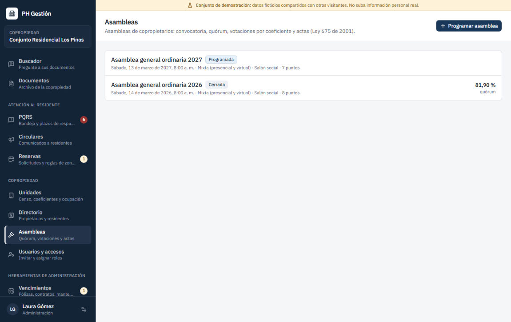
Lista de asambleas: programadas, en curso y cerradas.
1. Programar la asamblea
Pulse Programar asamblea.
Escriba el título, el tipo (ordinaria o extraordinaria), la modalidad (presencial, virtual o mixta), la fecha y hora, el lugar y la convocatoria (primera o segunda).
Escriba el máximo de poderes por apoderado (según su reglamento).
Arme el orden del día: para cada punto indique si es informativo o se vota y con qué mayoría (simple, calificada del 70 % o elección).
Guarde. Publique la convocatoria con al menos 15 días calendario de anticipación (art. 39), por ejemplo con una circular de tipo Convocatoria.
Programar la asamblea y su orden del día.
Modalidad virtual o mixtaLos propietarios con cuenta en el portal pueden registrar su asistencia y votar
desde su celular el día de la asamblea.
2. Instalar la asamblea y registrar la asistencia
El día de la asamblea, abra la asamblea y pulse Instalar asamblea. Escriba el presidente y el secretario. En ese momento se fija el padrón con las unidades, coeficientes y propietarios del día.
En Padrón y asistencia, pulse Registrar en cada unidad que llega: como Propietario o como Apoderado (con poder), con su nombre y documento. Conserve el poder firmado.
El quórum se actualiza solo, en porcentaje de coeficientes. Con más del 50 % (primera convocatoria) aparece «Hay quórum».
Si alguien se va antes de una votación, pulse Retiro: deja de contar para el quórum desde ese momento.
Padrón y asistencia durante la asamblea.
3. Votar cada punto
En el orden del día, pulse Abrir votación en el punto. Solo se puede votar con quórum y un punto a la vez.
Los propietarios presentes con cuenta votan desde su celular. Los que están en la sala sin celular se votan desde la lista Votos en la sala (Sí, No o Abstención por unidad).
Los resultados se actualizan solos, en unidades y en coeficientes, e indican si el punto se aprueba con la mayoría exigida.
Pulse Cerrar votación. Los puntos informativos se cierran con Marcar tratado, con una conclusión opcional.
Votación en vivo con resultados por coeficiente.Así vota un propietario desde su celular.
4. Cerrar la asamblea y obtener el acta
Al terminar, pulse Cerrar asamblea.
Pulse Acta en PDF: se genera el acta con la asistencia, el quórum, cada punto, sus votaciones y sus resultados.
Pulse Guardar acta en Documentos para que quede en el archivo y sea consultable en el buscador.
Asamblea cerrada con su acta y los resultados.
Validez jurídicaLa plataforma calcula quórum y mayorías según la Ley 675, pero la validez de la asamblea
depende también de la convocatoria correcta y del acta firmada por el presidente y el secretario.
17. Mantenimiento: activos, planes y fallas
Hojas de vida de los equipos e infraestructura (ascensores, motobombas, planta eléctrica, cubiertas…), con su
semáforo de mantenimiento, planes preventivos, fallas (novedades), recomendaciones técnicas, contratistas, códigos QR y reportes.
Panel de mantenimiento: cumplimiento, fallas, costos y presupuesto.
Activos
Lista de activos con su estado y semáforo de mantenimiento.
Pulse Nuevo activo.
Llene nombre, categoría, tipo, ubicación, marca, modelo, serie, fecha de instalación, vida útil, garantía, criticidad (qué tanto afecta si falla) y el contratista que lo mantiene.
Guarde. El código interno (ACT-…) y el código QR se generan solos.
Registrar un activo.
Etiquetas QR descarga un PDF con las etiquetas para pegar en cada equipo. Al escanear una con el
celular, el técnico abre la ficha del equipo y registra el trabajo en el sitio.
La ficha del activo
Ficha de un activo: estado, criticidad y pestañas.
Resumen: ficha técnica, estado y vida útil.
Plan y agenda: planes preventivos del equipo y sus próximas fechas (Ejecutar).
Historial: intervenciones realizadas. Es un registro inmutable: los errores se anulan y quedan visibles.
Novedades y Recomendaciones: fallas y sugerencias de los técnicos para este equipo.
Documentos: manuales, garantías, contratos y certificados vinculados (Vincular).
Fotos y Auditoría.
Planes preventivos y calendario
En Planes pulse Nuevo plan: elija el activo, la actividad, la periodicidad, quién lo ejecuta, el costo por vez y, si quiere, una lista de chequeo.
Al aprobarlo se crean las fechas de los próximos 12 meses en el Calendario. Los planes que propone recepción aparecen en «Pendientes de aprobación» con el botón Aprobar.
En el calendario, los mantenimientos vencidos aparecen arriba. Pulse Ejecutar para registrarlo o reprogramarlo.
Calendario de mantenimiento con lo vencido primero.
Registrar un mantenimiento
Desde el calendario (Ejecutar) o desde la ficha del activo (Registrar mantenimiento).
Elija el tipo (preventivo, correctivo, predictivo o inspección), la fecha y quién lo hizo. Llene la lista de chequeo si el plan la tiene.
Describa el trabajo, los repuestos, el tiempo, los hallazgos y el estado en que queda el equipo.
Escriba los costos (mano de obra y repuestos) y las recomendaciones: cada una queda como tarea con seguimiento.
Guarde. El registro no se edita después; un error se corrige anulándolo.
Registrar un mantenimiento ejecutado.
Novedades (fallas)
Cualquiera del equipo puede reportar una falla con Reportar falla: elige el activo, describe el
problema, la prioridad y adjunta fotos. Las críticas llegan además por correo a la administración. Cada novedad pasa de
Reportada → En ejecución → Cerrada, con trazabilidad. «Demoradas» son las críticas con más de 24 horas, o las altas con más de 72, sin atender.
Bandeja de novedades.Reportar una falla.
Recomendaciones, contratistas y reportes
Recomendaciones: lo que sugieren los técnicos, con prioridad, responsable, fecha límite y costo estimado. El costo pendiente entra en la proyección del presupuesto.
Contratistas: empresas con su NIT, contacto, especialidades y contrato. El fin del contrato genera avisos a 60 y 30 días.
Reportes: inventario y hojas de vida, cumplimiento del plan, correctivos, matriz de recomendaciones, costos y proyección del presupuesto, e infraestructura. Se ven en pantalla, en Excel o en PDF (para el consejo o la asamblea). La hoja de vida de cada activo, con su QR, se descarga desde su ficha.
Reporte de costos y proyección del mantenimiento.
Parte IVGuías por rol
Las tareas de cada día para cada persona del equipo y para los residentes.
18. Recepción
Al entrar verá el buscador y en el menú: Atención al residente, Unidades (consulta), Recaudos y Mantenimiento.
Tarea
Dónde
Sección
Cobrar parqueadero, alquiler o aseo
Recaudos → Registrar
14
Radicar una PQRS que llega en persona o por teléfono
PQRS → Radicar PQRS
15
Consultar a quién pertenece una placa o una unidad
Unidades / Directorio
11
Reportar una falla
Mantenimiento → Novedades → Reportar falla
17
Cerrar la caja al terminar el turno
Recaudos → Caja → Cerrar caja
14
Entregar el efectivo a la administración
Recaudos → Caja → Entregar a administración
14
Registrar asistencia en la asamblea
Asambleas → la asamblea → Padrón
16
La caja de recepción con el efectivo del turno.
19. Contabilidad
Tarea
Dónde
Sección
Aprobar las consignaciones y verificarlas en el extracto
Recaudos → Conciliación
14
Verificar transferencias recibidas
Recaudos → Movimientos (estado «Por verificar») → Verificar en extracto
14
Registrar pagos de cuotas
Cartera → Registrar pago
13
Revisar alertas de auditoría
Recaudos → Alertas
14
Informes para la contabilidad
Recaudos → Reportes (Excel)
14
Conciliación vista por contabilidad: aprobar y verificar consignaciones.
PH Gestión no reemplaza el software contable ni factura ante la DIAN: los informes en Excel se llevan al software del contador.
20. Consejo de administración
Rol de consulta, sin modificar: tableros de recaudos y cartera, panel de mantenimiento, actas, asambleas y documentos.
El primer día de cada mes recibe por correo el corte mensual de recaudos en PDF.
Panel de mantenimiento como lo ve el consejo.
21. Técnico de mantenimiento
Al entrar ve Mi trabajo: lo vencido y lo de hoy primero, y lo de los próximos 60 días. Está
pensado para el celular.
Escanee la etiqueta QR del equipo con la cámara del celular, o elija el mantenimiento en la lista.
Pulse Ejecutar, llene la lista de chequeo (Hecho / No aplica / Pendiente), describa el trabajo, adjunte fotos y guarde.
Si encuentra una falla, pulse Reportar falla.
«Mi trabajo» en el celular (izquierda) y registro con lista de chequeo (derecha).
22. Guía del residente y propietario
El portal del residente funciona igual en el celular y en el computador. Para entrar necesita que la administración le dé
acceso (le llega un correo para activar su cuenta, ver sección 2).
Inicio del residente (izquierda) y su estado de cuenta (derecha), en el celular.
Inicio
Muestra si está al día con la administración, las circulares sin leer, sus PQRS y reservas, y accesos rápidos.
Mi cuenta: cuotas, pagos y paz y salvo
Entre a Mi cuenta. Verá su saldo, lo pendiente por pagar y todos los movimientos.
Los datos para pagar (por ejemplo, la cuenta bancaria) aparecen arriba.
Descargue su estado de cuenta en PDF. Si está al día, descargue su Paz y salvo, con código de verificación.
Estado de cuenta del residente.
Radicar una PQRS
Entre a PQRS y pulse Nueva PQRS.
Elija el tipo (petición, queja, reclamo, sugerencia o felicitación) y el tema.
Escriba el asunto y la descripción (qué pasa, desde cuándo y dónde). Adjunte fotos o PDF si ayudan.
Pulse Radicar. Recibirá un número de radicado y la respuesta llegará por correo y al portal en máximo 15 días hábiles.
Cuando le respondan, califique la atención o reábrala si el problema sigue.
Radicar una PQRS desde el portal.
Circulares
En Circulares lea los comunicados de la administración. Al abrir una, queda registrado que la leyó
(«Lectura confirmada»).
Una circular abierta con la lectura confirmada.
Reservar una zona social
Entre a Reservar y elija la zona (salón social, BBQ, cancha…). Verá su capacidad, su costo y sus reglas.
Elija el día en el calendario: los días con reservas muestran las horas ocupadas.
Elija el horario, el número de personas y el motivo, y envíe la solicitud.
Según la zona, queda confirmada de inmediato o esperando aprobación (le llega un correo con la decisión). Puede cancelarla desde «Mis próximas reservas».
Reservar una zona social: calendario y reglas.
Asambleas: asistir y votar
En Asambleas verá las convocatorias. El día de una asamblea virtual o mixta, ábrala y pulse Registrar mi asistencia: desde ese momento cuenta para el quórum.
Cuando la administración abra la votación de un punto, aparecerán los botones (Sí, No, Abstención o los candidatos). Toque su opción.
Verá los resultados en vivo. Después podrá descargar el acta.
Si no puede asistir, otorgue un poder por escrito a otra persona, según el reglamento.
Mi unidad, buscador y documentos
Mi unidad: sus datos en el censo (personas, vehículos, coeficiente). Si algo está mal, avísele a la administración con una PQRS.
Buscador: pregunte, por ejemplo, «¿Se permiten mascotas?» o «¿Cuál es el horario de la piscina?». Responde con los documentos publicados para los residentes.
Documentos: reglamento, manual de convivencia y lo que publique la administración.
Parte VAyuda
Respuestas a las dudas más comunes, solución de problemas y glosario.
23. Preguntas frecuentes y solución de problemas
Cuenta y acceso
Problema
Solución
No me llegó el correo de invitación o de recuperación
Revise correo no deseado y «Promociones». Espere unos minutos. Pida a la administración que use Reenviar en Usuarios y accesos, o use «¿Olvidó su contraseña?» (si nunca activó la cuenta, le llega de nuevo la invitación).
«El enlace ya no sirve»
Ya se usó o venció (7 días la invitación, 1 hora la recuperación), o se pidió uno más nuevo. Pida otro con «Pedir un enlace nuevo».
«Correo o contraseña incorrectos»
Revise mayúsculas y que el correo sea el registrado. Si no la recuerda, use «¿Olvidó su contraseña?».
«Demasiados intentos»
Es una protección automática. Espere unos 15 minutos o recupere la contraseña.
«Su cuenta aún no tiene copropiedades»
Su cuenta existe, pero ninguna copropiedad le ha dado acceso (o se lo retiraron). Hable con la administración.
No veo una sección que necesito
Su rol no la incluye. La administración puede cambiarle el rol.
Administro varias copropiedades
Use el mismo correo en todas. Al entrar verá «Mis copropiedades», el resumen de todas (sección 4). Para entrar a una, toque su nombre o use el selector de arriba a la izquierda.
Un residente no tiene correo
No puede tener cuenta en el portal, pero sí figurar en el censo. Recepción puede radicar sus PQRS y registrar sus pagos.
Documentos y buscador
Problema
Solución
El documento quedó en «Error»
En el menú ⋯ del documento use Reintentar procesamiento. Si sigue fallando, verifique que sea un PDF válido, sin contraseña y de menos de 50 MB, elimínelo y súbalo de nuevo.
El buscador no encuentra algo que sí está en un documento
Confirme que el documento esté «Disponible» y, si pregunta un residente, que sea visible para residentes. Reformule la pregunta con las palabras del documento.
No aparecen los vencimientos de un contrato
Revise que el documento tenga la categoría Contratos (o Mantenimiento) y que esté «Disponible»; si es escaneado, que sea legible. Puede usar «Volver a procesar». Para contratos de mantenimiento, registre también la fecha de fin en Mantenimiento → Contratistas, que avisa a los 60 y 30 días.
Dinero, cartera y recaudos
Problema
Solución
Registré mal un pago o un recaudo
Anúlelo con motivo y regístrelo de nuevo: el pago, desde el estado de cuenta de la unidad; el recaudo, desde su detalle en Movimientos. Nada se borra: la anulación queda en la auditoría.
La cuota de una unidad no es la esperada
Revise su coeficiente (ficha de la unidad) y la configuración de la cartera. Los coeficientes deben sumar 100 %.
El pago quedó en intereses y no en la cuota
Es lo que exige la ley: los pagos se aplican primero a intereses y luego a lo más antiguo.
No me deja expedir el paz y salvo
La unidad tiene saldo pendiente. Revise el estado de cuenta.
La caja no cuadra
Registre el conteo real; la diferencia queda como alerta para la administración, que la revisa con los movimientos del turno.
Una transferencia sigue «Por verificar»
Contabilidad debe confirmarla contra el extracto. Después de 3 días se genera una alerta.
Residentes, reservas y asambleas
Problema
Solución
Un residente no puede reservar
Revise las reglas de la zona: anticipación, reservas por mes y si exige estar al día con la cartera.
No se puede abrir la votación
Se necesita quórum y solo puede haber un punto en votación a la vez.
Un propietario no puede votar desde el celular
Debe tener cuenta vinculada a su unidad y haber registrado su asistencia. Si no, vote por él desde «Votos en la sala».
Cambió el censo después de instalar la asamblea
No afecta: el padrón se fija al instalarla, como exige la ley.
Privacidad y seguridad
Cada copropiedad está aislada de las demás: nadie de otro conjunto puede ver sus datos.
Cada rol ve solo lo que le corresponde (por ejemplo, un residente solo ve su unidad y su cuenta).
La política de tratamiento de datos está en https://app.propiedadhorizontal.app/privacidad.
Nunca comparta su contraseña. Si cree que alguien la conoce, cámbiela (sección 3): se cierran las demás sesiones.
24. Glosario
Coeficiente de copropiedad
Porcentaje de cada unidad sobre el total del conjunto. Define la cuota y el peso del voto. Todos suman 100 %.
Quórum
Mínimo de coeficientes presentes para deliberar: más del 50 % en primera convocatoria.
Mayoría simple
Más de la mitad de los coeficientes presentes.
Mayoría calificada
El 70 % de los coeficientes del conjunto, para decisiones como reformar el reglamento.
Padrón
Lista de unidades con derecho a voto en una asamblea, fijada al instalarla.
Apoderado
Persona que asiste y vota en nombre de un propietario, con poder escrito.
Periodo
Mes facturado en la cartera.
Saldo a favor
Lo que sobra de un pago; se aplica a las próximas cuotas.
Paz y salvo
Certificado de que la unidad no tiene deudas, con código de verificación.
Recaudo
Ingreso distinto a la cuota (parqueadero, alquiler, aseo…).
Cierre de caja (arqueo)
Conteo del efectivo al terminar el turno, comparado con lo registrado.
Consignación
Depósito del efectivo en el banco, que agrupa varios recaudos.
Verificar en extracto
Confirmar que el dinero aparece en el extracto bancario.
Equipo o elemento de infraestructura con hoja de vida.
Novedad
Falla reportada en un activo.
Plan preventivo
Regla de cada cuánto se mantiene un activo; genera las fechas del calendario.
Criticidad
Qué tanto afecta a la copropiedad si un activo falla.
Anular
Dejar sin efecto un registro con un motivo. El registro anulado sigue visible.
Auditoría
Registro automático de quién hizo cada cambio, cuándo y por qué. Nadie puede editarlo.
25. ¿Necesita más ayuda?
Busque su duda en el índice o en las preguntas frecuentes (sección 23).
Pregúntele al buscador de la plataforma sobre el reglamento y los documentos de su copropiedad.
Si es residente, radique una PQRS a la administración.
Si es parte del equipo, consulte con la administración de su copropiedad, que es quien gestiona los accesos y la configuración.
Si nada de lo anterior lo resuelve, o si encuentra un error en la plataforma, escriba al soporte de PH Gestión.
Soporte de PH Gestión
WhatsApp: 311 494 0699
Correo: 9bgonzalezdaniel@gmail.com Para atenderlo más rápido, indique su nombre, su copropiedad, qué estaba haciendo y,
si puede, una captura de pantalla del problema. Nunca envíe su contraseña: el soporte jamás se la pedirá.